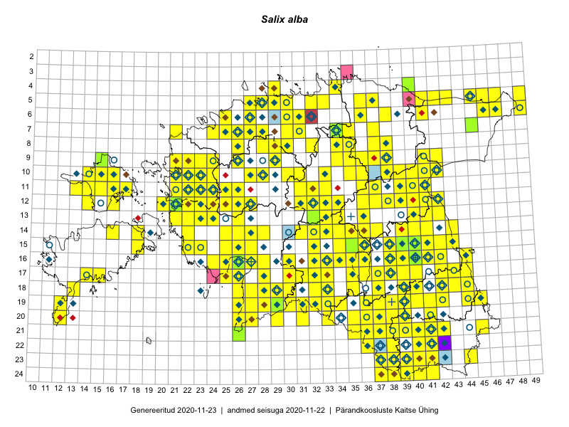

Salix alba — hõberemmelgas
Salicaceae :: Salix alba L. (842); Salix alba subsp. vitellina (L.) Arcangeli (11); Salix alba var. calva G.Mey. (10); Salix alba var. tristis Gaud. (6); Salix alba f. ovalis Wimm. (4); Salix alba var. sericea Gaud. (4); Salix alba var. chermessina Hartig (3)

Kaart põhineb 1016 kirjel:
vaatlusi 626
herbaareksemplare 254
PKÜ kirjeid1 93
ELFi kirjeid2 36
LVA kirjeid3 7
Taime kaasaegsed ja ajaloolised leiukohad asuvad 329 ruudus.
Tingmärgid ja leidudega ruutude arvud periooditi uues (u) ja 2005 andmestikus (v)
| █ | vahemik | u4 | v5 |
|---|---|---|---|
| █ | 2006–2020 | 284 | – |
| ◆/◇ | 1971–2005 | 176 | 168 |
| ○ | 1921–1970 | 88 | 10 |
| + | kuni 1920 | 4 | 0 |
| × | hävinud | – | 0 |
| ? | kaheldav | – | 0 |
| Ruut | Leidja(d) | Leiuaeg | Kirje |
|---|---|---|---|
| 18-37 | Art Villem Adojaan | 2020-10-17 | punkt: Salix alba L. |
| 17-30 | Ott Luuk, Meeli Mesipuu | 2020-09-01 | PKÜ: 21315 |
| 17-30 | Ott Luuk, Meeli Mesipuu | 2020-09-01 | PKÜ: 21317 |
| 18-33 | Ott Luuk, Jaak-Albert Metsoja | 2020-08-21 | ruut/ala: Salix alba L. |
| 18-33 | Ott Luuk, Jaak-Albert Metsoja | 2020-08-21 | PKÜ: 20882 |
| 06-27 | Peedu Saar | 2020-07-30 | ruut/ala: Salix alba L. |
| 18-33 | Art Villem Adojaan | 2020-07-25 | punkt: Salix alba L. |
| 16-40 | Liisi Promet | 2020-06-29 | TU385520: Salix alba L. |
| 08-28 | Ott Luuk | 2020-06-21 | ruut/ala: Salix alba L. |
| 05-29 | Peedu Saar, Mart Meriste | 2020-06-19 | ruut/ala: Salix alba L. |
| 21-38 | Tiina Ploom | 2020-06-07 | punkt: Salix alba L. |
| 10-28 | Kalev Tihkan | 2020-06-06 | punkt: Salix alba L. |
| 09-26 | Hele Möllits | 2020-06-06 | punkt: Salix alba L. |
| 19-33 | Heidi Öövel, Mihkel Tiido | 2020-06-06 | punkt: Salix alba L. |
| 10-21 | Ott Luuk | 2019-09-19 | ruut/ala: Salix alba L. |
| 12-23 | Peedu Saar, Toomas Kukk | 2019-08-30 | ruut/ala: Salix alba L. |
| 12-31 | Ott Luuk, Eerik Leibak | 2019-08-29 | ruut/ala: Salix alba L. |
| 15-32 | Mari Reitalu, Thea Kull, Martin Tikk | 2019-08-29 | ruut/ala: Salix alba L. |
| 12-36 | Ott Luuk, Eerik Leibak | 2019-08-27 | ruut/ala: Salix alba L. |
| 15-35 | Meeli Mesipuu, Timo Luhamäe | 2019-08-27 | TAA0149857: Salix alba L. |
| 16-33 | Mari Reitalu, Thea Kull | 2019-08-27 | ruut/ala: Salix alba L. |
| 11-36 | Peedu Saar | 2019-08-10 | ruut/ala: Salix alba L. |
| 07-34 | Toomas Kukk, Rein Kalamees, Kaur Maran | 2019-08-07 | ruut/ala: Salix alba L. |
| 04-34 | Rein Kalamees, Toomas Kukk | 2019-08-06 | ruut/ala: Salix alba L. |
| 07-31 | Peedu Saar, Timo Luhamäe | 2019-08-05 | ruut/ala: Salix alba L. |
| 05-33 | Peedu Saar, Timo Luhamäe | 2019-08-05 | ruut/ala: Salix alba L. |
| 23-38 | Peedu Saar, Toomas Kukk | 2019-08-01 | punkt: Salix alba L. |
| 11-41 | Kaili Kattai | 2019-07-28 | punkt: Salix alba L. |
| 23-41 | Toomas Kukk, Indrek Tammekänd | 2019-07-12 | ruut/ala: Salix alba L. |
| 23-38 | Peedu Saar, Timo Luhamäe | 2019-07-12 | ruut/ala: Salix alba L. |
| 24-37 | Peedu Saar, Timo Luhamäe | 2019-07-12 | ruut/ala: Salix alba L. |
| 19-40 | Meeli Mesipuu | 2019-07-12 | ruut/ala: Salix alba L. |
| 22-41 | Toomas Kukk, Indrek Tammekänd | 2019-07-11 | ruut/ala: Salix alba L. |
| 23-37 | Peedu Saar, Timo Luhamäe | 2019-07-11 | ruut/ala: Salix alba L. |
| 23-44 | Ott Luuk, Tiit Hallikma | 2019-07-11 | ruut/ala: Salix alba L. |
| 19-39 | Thea Kull | 2019-07-10 | ruut/ala: Salix alba L. |
| 05-28 | Meeli Mesipuu | 2019-06-30 | ruut/ala: Salix alba L. |
| 05-28 | Meeli Mesipuu | 2019-06-30 | ruut/ala: Salix alba L. |
| 05-28 | Meeli Mesipuu | 2019-06-30 | ruut/ala: Salix alba L. |
| 05-28 | Meeli Mesipuu | 2019-06-30 | ruut/ala: Salix alba L. |
| 05-27 | Meeli Mesipuu | 2019-06-26 | ruut/ala: Salix alba L. |
| 05-27 | Meeli Mesipuu | 2019-06-26 | ruut/ala: Salix alba L. |
| 05-28 | Meeli Mesipuu | 2019-06-26 | ruut/ala: Salix alba L. |
| 05-28 | Meeli Mesipuu | 2019-06-26 | ruut/ala: Salix alba L. |
| 05-27 | Meeli Mesipuu | 2019-06-22 | ruut/ala: Salix alba L. |
| 17-43 | Lisanne Nääb, Anni Miller, Pelle Mellov, Liis Vikerpuur, Indrek Hiiesalu, Jorma Ratas, Kaia Solnik, Keily Tammaru, Riin Magnus | 2019-06-20 | punkt: Salix alba L. |
| 16-40 | Aivi Kasik, Martin Tikk, Weralda Lakeman | 2019-06-15 | punkt: Salix alba L. |
| 10-28 | Aat Sarv, Ott Luuk | 2019-06-14 | punkt: Salix alba L. |
| 16-44 | Peedu Saar | 2019-06-07 | ruut/ala: Salix alba L. |
| 15-26 | Indrek Tammekänd | 2019-06-05 | ruut/ala: Salix alba L. |
| 15-40 | Ott Luuk, Thea Kull, Meeli Mesipuu | 2019-05-30 | ruut/ala: Salix alba L. |
| 12-41 | Ott Luuk, Sten Mander, Kersti Tambets | 2019-05-28 | ruut/ala: Salix alba L. |
| 13-42 | Toomas Kukk, Ilmar Uibopuu | 2018-06-17 | ruut/ala: Salix alba L. |
| 19-33 | Mari Reitalu, Elle Roosaluste | 2018-06-02–2018-06-03 | ruut/ala: Salix alba L. |
| 16-40 | Käthliin Järve | 2018-05-21 | LVA: 1128778378 |
| 05-27 | Georg Markus Allmägi, Karl Hendrik Hammerberg, Daniel Kuznetsov, Helina Maanso, Merili Meltsas, Kristiina Orunurm, Hanna-Liina Palu, Jan Erik Parbo, Gerda Marie Paulson, Karmel Remmelg, Rasmus Tuum, Riin Vaide, Elli Zahradnikova | 2018-05-18 | LVA: -801496678 |
| 16-40 | Kerli Nurme | 2018-05-08 | punkt: Salix alba L. |
| 16-40 | Karin Rea | 2018-05-08 | punkt: Salix alba L. |
| 09-35 | Peedu Saar, Toomas Kukk | 2017-09-27 | ruut/ala: Salix alba L. |
| 16-26 | Indrek Tammekänd | 2017-09-19 | TAA0143696: Salix alba L. |
| 10-14 | Peedu Saar, Ott Luuk | 2017-09-14 | ruut/ala: Salix alba L. |
| 10-15 | Ott Luuk, Peedu Saar | 2017-09-14 | ruut/ala: Salix alba L. |
| 19-27 | Peedu Saar, Toomas Kukk | 2017-09-06 | ruut/ala: Salix alba L. |
| 14-26 | Indrek Tammekänd | 2017-09-04 | ruut/ala: Salix alba L. |
| 20-29 | Toomas Kukk, Ott Luuk, Kersti Tambets, Timo Luhamäe, Sten Mander | 2017-08-30 | ruut/ala: Salix alba L. |
| 17-26 | Toomas Kukk, Ott Luuk, Kersti Tambets, Timo Luhamäe, Sten Mander | 2017-08-30 | ruut/ala: Salix alba L. |
| 17-31 | Ott Luuk, Toomas Kukk, Sten Mander, Kersti Tambets, Timo Luhamäe | 2017-08-29 | ruut/ala: Salix alba L. |
| 12-40 | Peedu Saar, Ott Luuk | 2017-08-23 | punkt: Salix alba L. |
| 14-27 | Ott Luuk, Indrek Tammekänd | 2017-08-11 | ruut/ala: Salix alba L. |
| 11-21 | Ilmar Uibopuu, Ott Luuk | 2017-08-10 | ruut/ala: Salix alba L. |
| 11-24 | Eerik Leibak, Toomas Kukk | 2017-08-10 | ruut/ala: Salix alba L. |
| 12-24 | Peedu Saar, Timo Luhamäe | 2017-08-09 | ruut/ala: Salix alba L. |
| 08-29 | Ott Luuk, Thea Kull | 2017-08-09 | ruut/ala: Salix alba L. |
| 12-27 | Mari Reitalu, Eerik Leibak | 2017-08-09 | ruut/ala: Salix alba L. |
| 07-28 | Peedu Saar, Timo Luhamäe | 2017-08-08 | ruut/ala: Salix alba L. |
| 12-33 | Thea Kull, Ott Luuk | 2017-08-07 | ruut/ala: Salix alba L. |
| 14-34 | Peedu Saar, Timo Luhamäe | 2017-08-07 | ruut/ala: Salix alba L. |
| 13-34 | Peedu Saar, Timo Luhamäe | 2017-08-07 | ruut/ala: Salix alba L. |
| 12-32 | Ott Luuk, Thea Kull | 2017-08-07 | ruut/ala: Salix alba L. |
| 12-34 | Ott Luuk, Thea Kull | 2017-08-03 | ruut/ala: Salix alba L. |
| 16-39 | Thea Kull, Ott Luuk | 2017-08-01 | ruut/ala: Salix alba L. |
| 07-24 | Toomas Kukk, Ilmar Uibopuu | 2017-07-30 | ruut/ala: Salix alba L. |
| 07-21 | Toomas Kukk, Ilmar Uibopuu | 2017-07-28 | ruut/ala: Salix alba L. |
| 21-36 | Peedu Saar, Ott Luuk | 2017-07-28 | ruut/ala: Salix alba L. |
| 22-36 | Ott Luuk, Peedu Saar | 2017-07-28 | ruut/ala: Salix alba L. |
| 21-36 | Ott Luuk, Peedu Saar | 2017-07-28 | punkt: Salix alba L. |
| 23-39 | Peedu Saar, Ott Luuk | 2017-07-27 | ruut/ala: Salix alba L. |
| 20-38 | Peedu Saar, Ott Luuk | 2017-07-25 | punkt: Salix alba L. |
| 20-38 | Ott Luuk, Peedu Saar | 2017-07-25 | ruut/ala: Salix alba L. |
| 06-49 | Toomas Kukk | 2017-07-22 | ruut/ala: Salix alba L. |
| 08-38 | Peedu Saar, Ott Luuk | 2017-07-18 | punkt: Salix alba L. |
| 08-38 | Ott Luuk, Peedu Saar | 2017-07-18 | ruut/ala: Salix alba L. |
| 16-40 | Peedu Saar | 2017-07-10–2017-07-11 | ruut/ala: Salix alba L. |
| 15-40 | Peedu Saar, Ott Luuk | 2017-07-05 | punkt: Salix alba L. |
| 15-40 | Ott Luuk, Peedu Saar | 2017-07-05 | ruut/ala: Salix alba L. |
| 15-41 | Ott Luuk, Peedu Saar | 2017-07-05 | ruut/ala: Salix alba L. |
| 18-29 | Indrek Tammekänd | 2017-07-05 | ruut/ala: Salix alba L. |
| 16-34 | Thea Kull, Ott Luuk | 2017-06-22 | ruut/ala: Salix alba L. |
| 16-35 | Ott Luuk, Thea Kull | 2017-06-22 | ruut/ala: Salix alba L. |
| 16-36 | Ott Luuk, Thea Kull | 2017-06-21 | ruut/ala: Salix alba L. |
| 19-12 | Ott Luuk, Peedu Saar | 2016-10-07 | ruut/ala: Salix alba L. |
| 19-30 | Peedu Saar, Ott Luuk | 2016-10-06 | ruut/ala: Salix alba L. |
| 20-31 | Ott Luuk, Peedu Saar | 2016-10-06 | ruut/ala: Salix alba L. |
| 05-32 | Toomas Kukk, Sander Laherand | 2016-08-31 | ruut/ala: Salix alba L. |
| 05-32 | Sander Laherand, Toomas Kukk | 2016-08-31 | punkt: Salix alba L. |
| 14-16 | Ott Luuk, Peedu Saar | 2016-08-31 | ruut/ala: Salix alba L. |
| 06-30 | Toomas Kukk, Sander Laherand | 2016-08-30 | ruut/ala: Salix alba L. |
| 06-30 | Sander Laherand, Toomas Kukk | 2016-08-30 | punkt: Salix alba L. |
| 05-29 | Toomas Kukk, Sander Laherand | 2016-08-29 | ruut/ala: Salix alba L. |
| 15-18 | Mari Reitalu, Hannes Pehlak | 2016-08-26 | ruut/ala: Salix alba L. |
| 17-44 | Peedu Saar | 2016-08-24 | ruut/ala: Salix alba L. |
| 23-44 | Peedu Saar, Karin Kikas | 2016-08-19 | ruut/ala: Salix alba L. |
| 14-18 | Mari Reitalu | 2016-08-15 | ruut/ala: Salix alba L. |
| 11-13 | Thea Kull, Peedu Saar | 2016-08-10 | ruut/ala: Salix alba L. |
| 10-16 | Meeli Mesipuu, Maret Gerz | 2016-08-09 | ruut/ala: Salix alba L. |
| 10-38 | Ott Luuk, Eerik Leibak | 2016-08-08 | ruut/ala: Salix alba L. |
| 20-12 | Mari Reitalu, Sirje Azarov | 2016-08-08 | ruut/ala: Salix alba L. |
| 11-17 | Maret Gerz, Meeli Mesipuu | 2016-08-08 | ruut/ala: Salix alba L. |
| 09-42 | Ott Luuk, Eerik Leibak | 2016-08-05 | ruut/ala: Salix alba L. |
| 10-41 | Ott Luuk, Eerik Leibak | 2016-08-04 | ruut/ala: Salix alba L. |
| 10-42 | Ott Luuk, Eerik Leibak | 2016-08-04 | ruut/ala: Salix alba L. |
| 15-36 | Miina Krabbi | 2016-08-04 | LVA: -1583602680 |
| 05-28 | Toomas Kukk, Peedu Saar | 2016-08-03 | ruut/ala: Salix alba L. |
| 10-39 | Ott Luuk, Eerik Leibak | 2016-08-03 | ruut/ala: Salix alba L. |
| 10-40 | Ott Luuk, Eerik Leibak | 2016-08-03 | ruut/ala: Salix alba L. |
| 18-13 | Mari Reitalu, Sirje Azarov | 2016-07-31 | ruut/ala: Salix alba L. |
| 05-30 | Sander Laherand, Eerik Leibak | 2016-07-29 | ruut/ala: Salix alba L. |
| 04-40 | Ott Luuk | 2016-07-28 | TAA0137962: Salix alba L. |
| 17-40 | Kersti Püssa, Rein Kalamees | 2016-07-28 | ruut/ala: Salix alba L. |
| 06-36 | Peedu Saar, Liina Oja, Susanna Vain | 2016-07-27 | ruut/ala: Salix alba L. |
| 07-37 | Meeli Mesipuu, Tiit Hallikma | 2016-07-27 | ruut/ala: Salix alba L. |
| 16-41 | Kersti Püssa, Rein Kalamees | 2016-07-27 | ruut/ala: Salix alba L. |
| 05-42 | Tiit Hallikma, Tõnu Ploompuu | 2016-07-26 | ruut/ala: Salix alba L. |
| 05-41 | Tiit Hallikma, Tõnu Ploompuu | 2016-07-26 | ruut/ala: Salix alba L. |
| 10-36 | Meeli Mesipuu, Timo Luhamäe | 2016-07-25 | ruut/ala: Salix alba L. |
| 17-38 | Kersti Püssa, Rein Kalamees | 2016-07-25 | ruut/ala: Salix alba L. |
| 17-26 | Indrek Tammekänd | 2016-07-25 | ruut/ala: Salix alba L. |
| 10-30 | Erkki Otsman, Sergei Smirnov | 2016-07-25 | ruut/ala: Salix alba L. |
| 14-37 | Eeva-Maria Jeletsky, Tarmo Niitla | 2016-07-23 | ruut/ala: Salix alba L. |
| 11-33 | Tõnu Ploompuu, Marko Veinbergs, Eerik Leibak | 2016-07-22 | ruut/ala: Salix alba L. |
| 13-36 | Toomas Kukk, Raivo Kalle | 2016-07-22 | ruut/ala: Salix alba L. |
| 10-31 | Toivo Sepp, Peedu Saar | 2016-07-22 | ruut/ala: Salix alba L. |
| 15-34 | Thea Kull, Tiit Hallikma | 2016-07-22 | ruut/ala: Salix alba L. |
| 10-31 | Peedu Saar, Toivo Sepp | 2016-07-22 | punkt: Salix alba L. |
| 14-35 | Liina Oja, Elle Rajandu, Susanna Vain | 2016-07-22 | ruut/ala: Salix alba L. |
| 12-37 | Eeva-Maria Jeletsky, Tarmo Niitla | 2016-07-22 | ruut/ala: Salix alba L. |
| 12-31 | Aat Sarv, Indrek Tammekänd | 2016-07-22 | ruut/ala: Salix alba L. |
| 14-32 | Toomas Kukk, Liina Oja | 2016-07-21 | ruut/ala: Salix alba L. |
| 15-32 | Toomas Kukk, Liina Oja | 2016-07-21 | ruut/ala: Salix alba L. |
| 18-37 | Rein Kalamees, Kersti Püssa | 2016-07-21 | ruut/ala: Salix alba L. |
| 13-33 | Ott Luuk, Indrek Tammekänd | 2016-07-21 | ruut/ala: Salix alba L. |
| 14-33 | Ott Luuk, Indrek Tammekänd | 2016-07-21 | ruut/ala: Salix alba L. |
| 10-33 | Mari Metsoja, Eerik Leibak | 2016-07-21 | ruut/ala: Salix alba L. |
| 15-41 | Kaire Lanno, Karin Kaljund | 2016-07-21 | ruut/ala: Salix alba L. |
| 07-27 | Erkki Otsman, Sergei Smirnov | 2016-07-21 | ruut/ala: Salix alba L. |
| 14-41 | Eeva-Maria Jeletsky, Tarmo Niitla | 2016-07-21 | ruut/ala: Salix alba L. |
| 11-32 | Aat Sarv, Jaak-Albert Metsoja | 2016-07-21 | ruut/ala: Salix alba L. |
| 17-32 | Toomas Kukk, Eerik Leibak | 2016-07-20 | ruut/ala: Salix alba L. |
| 17-33 | Toomas Kukk, Eerik Leibak | 2016-07-20 | ruut/ala: Salix alba L. |
| 15-27 | Tiit Hallikma, Tõnu Ploompuu | 2016-07-20 | ruut/ala: Salix alba L. |
| 15-27 | Tiit Hallikma, Tõnu Ploompuu | 2016-07-20 | punkt: Salix alba L. |
| 17-28 | Ott Luuk, Liina Oja | 2016-07-20 | ruut/ala: Salix alba L. |
| 16-28 | Ott Luuk, Liina Oja | 2016-07-20 | ruut/ala: Salix alba L. |
| 17-31 | Oliver Parrest, Timo Luhamäe | 2016-07-20 | ruut/ala: Salix alba L. |
| 17-35 | Meeli Mesipuu, Toivo Sepp, Susanna Vain | 2016-07-20 | ruut/ala: Salix alba L. |
| 15-38 | Kaire Lanno, Karin Kaljund | 2016-07-20 | ruut/ala: Salix alba L. |
| 16-35 | Jaak-Albert Metsoja, Lena Neuenkamp, Sirje Azarov | 2016-07-20 | ruut/ala: Salix alba L. |
| 16-32 | Elle Rajandu, Indrek Tammekänd | 2016-07-20 | ruut/ala: Salix alba L. |
| 18-29 | Aat Sarv, Raivo Kalle | 2016-07-20 | ruut/ala: Salix alba L. |
| 18-28 | Toivo Sepp, Liina Oja | 2016-07-19 | ruut/ala: Salix alba L. |
| 19-28 | Toivo Sepp, Liina Oja | 2016-07-19 | ruut/ala: Salix alba L. |
| 18-33 | Thea Kull, Indrek Tammekänd | 2016-07-19 | ruut/ala: Salix alba L. |
| 16-38 | Rein Kalamees, Kersti Püssa | 2016-07-19 | ruut/ala: Salix alba L. |
| 18-30 | Ott Luuk, Raivo Kalle, Susanna Vain | 2016-07-19 | ruut/ala: Salix alba L. |
| 19-30 | Ott Luuk, Raivo Kalle, Susanna Vain | 2016-07-19 | ruut/ala: Salix alba L. |
| 19-31 | Meeli Mesipuu, Mari Metsoja | 2016-07-19 | ruut/ala: Salix alba L. |
| 20-31 | Mari Metsoja, Meeli Mesipuu | 2016-07-19 | ruut/ala: Salix alba L. |
| 15-39 | Karin Kaljund, Kaire Lanno | 2016-07-19 | TAA0144326: Salix alba L. |
| 20-27 | Aat Sarv, Eerik Leibak | 2016-07-19 | punkt: Salix alba L. |
| 20-27 | Aat Sarv, Eerik Leibak | 2016-07-19 | ruut/ala: Salix alba L. |
| 21-35 | Toomas Kukk, Susanna Vain, Raivo Kalle | 2016-07-18 | ruut/ala: Salix alba L. |
| 20-26 | Sirje Azarov, Indrek Tammekänd | 2016-07-18 | ruut/ala: Salix alba L. |
| 19-26 | Ott Luuk, Hannes Pehlak | 2016-07-18 | ruut/ala: Salix alba L. |
| 17-26 | Meeli Mesipuu, Timo Luhamäe | 2016-07-18 | ruut/ala: Salix alba L. |
| 18-26 | Meeli Mesipuu, Timo Luhamäe | 2016-07-18 | ruut/ala: Salix alba L. |
| 15-40 | Karin Kaljund, Kaire Lanno | 2016-07-18 | TAA0144325: Salix alba L. |
| 19-32 | Jaak-Albert Metsoja, Mari Metsoja, Lena Neuenkamp | 2016-07-18 | ruut/ala: Salix alba L. |
| 08-28 | Erkki Otsman, Sergei Smirnov | 2016-07-17 | ruut/ala: Salix alba L. |
| 07-28 | Erkki Otsman, Sergei Smirnov | 2016-07-15 | ruut/ala: Salix alba L. |
| 16-39 | Kersti Püssa, Rein Kalamees | 2016-07-13 | ruut/ala: Salix alba L. |
| 08-37 | Mari Reitalu, Triin Reitalu | 2016-07-12 | ruut/ala: Salix alba L. |
| 09-37 | Mari Reitalu, Triin Reitalu | 2016-07-11 | ruut/ala: Salix alba L. |
| 06-32 | Miina Krabbi | 2016-07-10 | LVA: -648469028 |
| 14-25 | Toomas Kukk, Oliver Parrest | 2016-07-08 | ruut/ala: Salix alba L. |
| 14-28 | Tiit Hallikma, Thea Kull | 2016-07-08 | punkt: Salix alba L. |
| 14-28 | Thea Kull, Tiit Hallikma | 2016-07-08 | ruut/ala: Salix alba L. |
| 12-20 | Rein Kalamees, Liina Oja | 2016-07-08 | ruut/ala: Salix alba L. |
| 14-27 | Peedu Saar, Timo Luhamäe | 2016-07-08 | ruut/ala: Salix alba L. |
| 14-26 | Maret Gerz, Liina Oja | 2016-07-08 | ruut/ala: Salix alba L. |
| 13-26 | Maret Gerz, Liina Oja | 2016-07-08 | ruut/ala: Salix alba L. |
| 09-24 | Jaak-Albert Metsoja, Mari Metsoja | 2016-07-08 | ruut/ala: Salix alba L. |
| 15-26 | Indrek Tammekänd | 2016-07-08 | ruut/ala: Salix alba L. |
| 10-22 | Sirje Azarov, Oliver Parrest | 2016-07-07 | ruut/ala: Salix alba L. |
| 11-22 | Sirje Azarov, Oliver Parrest | 2016-07-07 | ruut/ala: Salix alba L. |
| 09-21 | Jaak-Albert Metsoja, Mari Metsoja | 2016-07-07 | ruut/ala: Salix alba L. |
| 10-21 | Jaak-Albert Metsoja, Mari Metsoja | 2016-07-07 | ruut/ala: Salix alba L. |
| 11-21 | Aat Sarv, Maret Gerz | 2016-07-07 | ruut/ala: Salix alba L. |
| 09-29 | Toomas Kukk, Sander Laherand | 2016-07-06 | ruut/ala: Salix alba L. |
| 09-29 | Toomas Kukk, Sander Laherand | 2016-07-06 | punkt: Salix alba L. |
| 09-23 | Jaak-Albert Metsoja, Mari Metsoja | 2016-07-06 | ruut/ala: Salix alba L. |
| 09-22 | Jaak-Albert Metsoja, Mari Metsoja | 2016-07-06 | ruut/ala: Salix alba L. |
| 10-24 | Helle Mäemets, Tiina Elvisto | 2016-07-06 | ruut/ala: Salix alba L. |
| 11-24 | Helle Mäemets, Tiina Elvisto | 2016-07-06 | ruut/ala: Salix alba L. |
| 11-23 | Aat Sarv, Maret Gerz | 2016-07-06 | ruut/ala: Salix alba L. |
| 10-23 | Aat Sarv, Maret Gerz | 2016-07-06 | ruut/ala: Salix alba L. |
| 12-24 | Sirje Azarov, Meeli Mesipuu | 2016-07-05 | ruut/ala: Salix alba L. |
| 12-22 | Mari Reitalu, Oliver Parrest | 2016-07-05 | ruut/ala: Salix alba L. |
| 12-23 | Mari Reitalu, Oliver Parrest | 2016-07-05 | ruut/ala: Salix alba L. |
| 12-27 | Jaak-Albert Metsoja, Mari Metsoja | 2016-07-05 | ruut/ala: Salix alba L. |
| 12-26 | Jaak-Albert Metsoja, Mari Metsoja | 2016-07-05 | ruut/ala: Salix alba L. |
| 13-21 | Aat Sarv, Maret Gerz | 2016-07-05 | ruut/ala: Salix alba L. |
| 07-30 | Rein Kalamees, Liina Oja | 2016-07-04 | ruut/ala: Salix alba L. |
| 08-30 | Rein Kalamees, Liina Oja | 2016-07-04 | ruut/ala: Salix alba L. |
| 15-26 | Aat Sarv, Maret Gerz | 2016-07-04 | ruut/ala: Salix alba L. |
| 08-32 | Rein Kalamees, Kersti Püssa | 2016-07-01 | ruut/ala: Salix alba L. |
| 10-36 | Karin Kikas, Elle Rajandu | 2016-06-30 | ruut/ala: Salix alba L. |
| 07-35 | Karin Kikas, Elle Rajandu | 2016-06-29 | ruut/ala: Salix alba L. |
| 19-26 | Indrek Tammekänd | 2016-06-29 | ruut/ala: Salix alba L. |
| 12-39 | Eeva-Maria Jeletsky, Tarmo Niitla | 2016-06-26 | ruut/ala: Salix alba L. |
| 12-40 | Eeva-Maria Jeletsky, Tarmo Niitla | 2016-06-26 | ruut/ala: Salix alba L. |
| 14-22 | Erkki Otsman, Sergei Smirnov | 2016-06-23 | ruut/ala: Salix alba L. |
| 14-36 | Kai Rünk, Ülle Jõgar, Illi Tarmu | 2016-06-20 | ruut/ala: Salix alba L. |
| 05-46 | Erkki Otsman, Sergei Smirnov | 2016-06-17–2016-06-18 | ruut/ala: Salix alba L. |
| 06-46 | Erkki Otsman, Sergei Smirnov | 2016-06-17–2016-06-18 | ruut/ala: Salix alba L. |
| 21-40 | Tarmo Niitla, Peedu Saar | 2016-06-17 | ruut/ala: Salix alba L. |
| 18-44 | Maret Gerz, Liina Oja | 2016-06-17 | ruut/ala: Salix alba L. |
| 21-38 | Jaak-Albert Metsoja, Mari Metsoja | 2016-06-17 | ruut/ala: Salix alba L. |
| 05-43 | Erkki Otsman, Sergei Smirnov | 2016-06-17 | ruut/ala: Salix alba L. |
| 23-38 | Rein Kalamees, Eerik Leibak | 2016-06-16 | ruut/ala: Salix alba L. |
| 20-41 | Peedu Saar, Tarmo Niitla | 2016-06-16 | ruut/ala: Salix alba L. |
| 21-41 | Ott Luuk, Sander Laherand | 2016-06-16 | ruut/ala: Salix alba L. |
| 19-37 | Maret Gerz, Liina Oja | 2016-06-16 | ruut/ala: Salix alba L. |
| 21-37 | Jaak-Albert Metsoja, Mari Metsoja | 2016-06-16 | ruut/ala: Salix alba L. |
| 05-47 | Erkki Otsman, Sergei Smirnov | 2016-06-16 | ruut/ala: Salix alba L. |
| 19-44 | Tarmo Niitla, Peedu Saar | 2016-06-15 | ruut/ala: Salix alba L. |
| 24-41 | Ott Luuk, Sander Laherand, Susanna Vain | 2016-06-15 | ruut/ala: Salix alba L. |
| 23-37 | Maret Gerz, Liina Oja | 2016-06-15 | ruut/ala: Salix alba L. |
| 09-41 | Kersti Püssa, Rein Kalamees | 2016-06-15 | ruut/ala: Salix alba L. |
| 06-49 | Erkki Otsman, Sergei Smirnov | 2016-06-15 | ruut/ala: Salix alba L. |
| 05-49 | Erkki Otsman, Sergei Smirnov | 2016-06-15 | ruut/ala: Salix alba L. |
| 21-45 | Toomas Kukk, Tiit Hallikma, Johannes Kõdar | 2016-06-14 | ruut/ala: Salix alba L. |
| 21-45 | Tiit Hallikma, Toomas Kukk, Johannes Kõdar | 2016-06-14 | punkt: Salix alba L. |
| 20-36 | Tarmo Niitla, Peedu Saar | 2016-06-14 | ruut/ala: Salix alba L. |
| 19-36 | Peedu Saar, Tarmo Niitla | 2016-06-14 | ruut/ala: Salix alba L. |
| 24-38 | Maret Gerz, Liina Oja | 2016-06-14 | ruut/ala: Salix alba L. |
| 24-39 | Maret Gerz, Liina Oja | 2016-06-14 | ruut/ala: Salix alba L. |
| 16-40 | Kai Rünk, Ülle Jõgar, Illi Tarmu | 2016-06-14 | ruut/ala: Salix alba L. |
| 18-40 | Toomas Kukk, Tiit Hallikma, Johannes Kõdar | 2016-06-13 | ruut/ala: Salix alba L. |
| 18-39 | Tarmo Niitla, Peedu Saar | 2016-06-13 | ruut/ala: Salix alba L. |
| 19-39 | Peedu Saar, Tarmo Niitla | 2016-06-13 | ruut/ala: Salix alba L. |
| 18-42 | Jaak-Albert Metsoja, Mari Metsoja | 2016-06-13 | ruut/ala: Salix alba L. |
| 18-27 | Peedu Saar, Ott Luuk | 2016-06-10 | ruut/ala: Salix alba L. |
| 13-42 | Kai Rünk, Ülle Jõgar, Illi Tarmu | 2016-06-10 | ruut/ala: Salix alba L. |
| 11-39 | Eeva-Maria Jeletsky, Tarmo Niitla | 2016-06-10 | ruut/ala: Salix alba L. |
| 12-38 | Eeva-Maria Jeletsky, Tarmo Niitla | 2016-06-10 | ruut/ala: Salix alba L. |
| 11-37 | Eeva-Maria Jeletsky, Tarmo Niitla | 2016-06-09 | ruut/ala: Salix alba L. |
| 13-40 | Kai Rünk, Ülle Jõgar, Illi Tarmu | 2016-06-08 | ruut/ala: Salix alba L. |
| 21-26 | Thea Kull, Peedu Saar | 2016-06-07 | ruut/ala: Salix alba L. |
| 20-26 | Peedu Saar, Thea Kull | 2016-06-06 | ruut/ala: Salix alba L. |
| 11-40 | Eeva-Maria Jeletsky, Tarmo Niitla | 2016-06-05 | ruut/ala: Salix alba L. |
| 11-41 | Eeva-Maria Jeletsky, Tarmo Niitla | 2016-06-05 | ruut/ala: Salix alba L. |
| 19-29 | Toomas Kukk, Tiit Hallikma | 2016-06-04 | TAA0137267: Salix alba L. |
| 12-41 | Eeva-Maria Jeletsky, Tarmo Niitla | 2016-06-04 | ruut/ala: Salix alba L. |
| 12-42 | Eeva-Maria Jeletsky, Tarmo Niitla | 2016-06-04 | ruut/ala: Salix alba L. |
| 05-28 | Peedu Saar | 2016-05-24 | ruut/ala: Salix alba L. |
| 16-40 | Peedu Saar | 2016-05-22 | punkt: Salix alba L. |
| 16-40 | Peedu Saar | 2016-05-22 | ruut/ala: Salix alba L. |
| 14-33 | Aat Sarv | 2016-04-25 | ruut/ala: Salix alba L. |
| 22-38 | Thea Kull, Jaak-Albert Metsoja | 2015-10-15 | PKÜ: 19425 |
| 12-38 | Ulvi Selgis | 2015-09-27 | LVA: 2085379232 |
| 23-37 | Ott Luuk, Peedu Saar | 2015-09-24 | PKÜ: 19797 |
| 06-31 | Rein Kalamees, Kersti Püssa | 2015-09-13 | ruut/ala: Salix alba L. |
| 12-21 | Tiit Hallikma, Toomas Kukk | 2015-08-27 | ruut/ala: Salix alba L. |
| 12-21 | Meeli Mesipuu, Maret Gerz | 2015-08-27 | PKÜ: 18696 |
| 12-21 | Meeli Mesipuu, Maret Gerz | 2015-08-26 | PKÜ: 18678 |
| 12-21 | Toomas Kukk, Tiit Hallikma | 2015-08-25 | punkt: Salix alba L. |
| 12-21 | Toomas Kukk, Tiit Hallikma | 2015-08-25 | TAA0134919: Salix alba L. |
| 12-20 | Meeli Mesipuu, Maret Gerz | 2015-08-25 | ruut/ala: Salix alba L. |
| 12-22 | Ott Luuk, Peedu Saar | 2015-08-24 | ruut/ala: Salix alba L. |
| 10-21 | Tõnu Ploompuu | 2015-08-21–2015-08-23 | ruut/ala: Salix alba L. |
| 19-45 | Thea Kull, Meeli Mesipuu | 2015-08-19 | ruut/ala: Salix alba L. |
| 13-23 | Kirsi Loide, Marje Loide | 2015-08-18–2015-08-20 | ruut/ala: Salix alba L. |
| 11-32 | Ott Luuk, Toivo Sepp | 2015-08-18–2015-08-19 | ruut/ala: Salix alba L. |
| 12-39 | Peedu Saar, Eerik Leibak | 2015-08-16 | ruut/ala: Salix alba L. |
| 05-36 | Rein Kalamees, Kersti Püssa | 2015-08-15 | ruut/ala: Salix alba L. |
| 05-37 | Rein Kalamees, Kersti Püssa | 2015-08-15 | ruut/ala: Salix alba L. |
| 20-12 | Oliver Parrest | 2015-08-15 | ruut/ala: Salix alba L. |
| 15-22 | Maret Gerz, Leena Gerz | 2015-08-15 | ruut/ala: Salix alba L. |
| 09-36 | Jana-Maria Habicht, Ester Valdvee | 2015-08-15 | ruut/ala: Salix alba L. |
| 08-26 | Aat Sarv | 2015-08-13 | ruut/ala: Salix alba L. |
| 04-29 | Kadi-Liis Kesler, Tiina Elvisto | 2015-08-12 | ruut/ala: Salix alba L. |
| 19-38 | Eeva-Maria Jeletsky, Tarmo Niitla | 2015-08-12 | ruut/ala: Salix alba L. |
| 21-38 | Eeva-Maria Jeletsky, Tarmo Niitla | 2015-08-12 | ruut/ala: Salix alba L. |
| 09-15 | Toomas Kukk, Eerik Leibak | 2015-08-11 | TAA0135524: Salix alba L. |
| 09-15 | Toomas Kukk, Eerik Leibak | 2015-08-11 | TAA0135527: Salix alba L. |
| 20-37 | Eeva-Maria Jeletsky, Tarmo Niitla | 2015-08-11 | ruut/ala: Salix alba L. |
| 20-38 | Eeva-Maria Jeletsky, Tarmo Niitla | 2015-08-11 | ruut/ala: Salix alba L. |
| 21-38 | Eeva-Maria Jeletsky, Tarmo Niitla | 2015-08-11 | ruut/ala: Salix alba L. |
| 13-22 | Kirsi Loide, Marje Loide | 2015-08-10–2015-08-13 | ruut/ala: Salix alba L. |
| 13-40 | Peedu Saar | 2015-08-10 | ruut/ala: Salix alba L. |
| 19-37 | Eeva-Maria Jeletsky, Tarmo Niitla | 2015-08-10 | ruut/ala: Salix alba L. |
| 16-24 | Maret Gerz, Leena Gerz | 2015-08-09 | ruut/ala: Salix alba L. |
| 16-25 | Maret Gerz, Leena Gerz | 2015-08-09 | ruut/ala: Salix alba L. |
| 10-27 | Aat Sarv | 2015-08-09 | ruut/ala: Salix alba L. |
| 15-25 | Maret Gerz, Leena Gerz | 2015-08-08 | ruut/ala: Salix alba L. |
| 17-25 | Maret Gerz, Leena Gerz | 2015-08-08 | ruut/ala: Salix alba L. |
| 22-40 | Eeva-Maria Jeletsky, Tarmo Niitla | 2015-08-05 | ruut/ala: Salix alba L. |
| 23-40 | Eeva-Maria Jeletsky, Tarmo Niitla | 2015-08-05 | ruut/ala: Salix alba L. |
| 14-36 | Peedu Saar | 2015-08-04 | ruut/ala: Salix alba L. |
| 21-40 | Malle Leht | 2015-08-02 | ruut/ala: Salix alba L. |
| 14-34 | Aat Sarv | 2015-08-01 | ruut/ala: Salix alba L. |
| 08-34 | Jana-Maria Habicht, Ester Valdvee | 2015-07-31 | ruut/ala: Salix alba L. |
| 15-32 | Aat Sarv | 2015-07-31 | ruut/ala: Salix alba L. |
| 15-42 | Peedu Saar, Eerik Leibak | 2015-07-30 | punkt: Salix alba L. |
| 15-42 | Peedu Saar, Eerik Leibak | 2015-07-30 | ruut/ala: Salix alba L. |
| 15-34 | Maria Abakumova, Helle Mäemets | 2015-07-30 | ruut/ala: Salix alba L. |
| 09-35 | Jana-Maria Habicht, Ester Valdvee, Kirke Pilvik, Anu Nurk | 2015-07-30 | ruut/ala: Salix alba L. |
| 12-25 | Aat Sarv | 2015-07-30 | ruut/ala: Salix alba L. |
| 12-27 | Aat Sarv | 2015-07-30 | ruut/ala: Salix alba L. |
| 11-25 | Aat Sarv | 2015-07-30 | ruut/ala: Salix alba L. |
| 10-42 | Kai Rünk, Ülle Jõgar, Illi Tarmu | 2015-07-29 | ruut/ala: Salix alba L. |
| 20-39 | Malle Leht, Raivo Leht | 2015-07-28 | ruut/ala: Salix alba L. |
| 15-26 | Kadi-Liis Kesler, Tiina Elvisto | 2015-07-28 | ruut/ala: Salix alba L. |
| 11-25 | Hanna-Eliisa Luts, Tõnu Ploompuu | 2015-07-28 | ruut/ala: Salix alba L. |
| 11-26 | Hanna-Eliisa Luts, Tõnu Ploompuu | 2015-07-28 | ruut/ala: Salix alba L. |
| 11-25 | Hanna-Eliisa Luts, Tõnu Ploompuu | 2015-07-28 | punkt: Salix alba L. |
| 17-42 | Kirsi Loide, Marje Loide | 2015-07-27–2015-07-28 | ruut/ala: Salix alba L. |
| 10-35 | Peedu Saar, Ott Luuk | 2015-07-27 | ruut/ala: Salix alba L. |
| 10-40 | Kai Rünk, Ülle Jõgar, Illi Tarmu | 2015-07-27 | ruut/ala: Salix alba L. |
| 21-42 | Vivika Väli, Ülo Väli | 2015-07-26 | ruut/ala: Salix alba L. |
| 21-39 | Eeva-Maria Jeletsky, Tarmo Niitla | 2015-07-26 | ruut/ala: Salix alba L. |
| 24-40 | Eeva-Maria Jeletsky, Tarmo Niitla | 2015-07-26 | ruut/ala: Salix alba L. |
| 09-34 | Jana-Maria Habicht, Ester Valdvee, Kirke Pilvik | 2015-07-25–2015-07-26 | ruut/ala: Salix alba L. |
| 06-25 | Mari Metsoja, Jaak-Albert Metsoja | 2015-07-25 | ruut/ala: Salix alba L. |
| 18-40 | Malle Leht | 2015-07-25 | ruut/ala: Salix alba L. |
| 24-39 | Eeva-Maria Jeletsky, Tarmo Niitla | 2015-07-25 | ruut/ala: Salix alba L. |
| 24-40 | Eeva-Maria Jeletsky, Tarmo Niitla | 2015-07-25 | ruut/ala: Salix alba L. |
| 06-41 | Tiit Hallikma, Toomas Kukk | 2015-07-24 | punkt: Salix alba L. |
| 21-39 | Eeva-Maria Jeletsky, Tarmo Niitla | 2015-07-24 | ruut/ala: Salix alba L. |
| 23-39 | Eeva-Maria Jeletsky, Tarmo Niitla | 2015-07-24 | ruut/ala: Salix alba L. |
| 14-40 | Erkki Otsman, Sergei Smirnov | 2015-07-22–2015-07-23 | ruut/ala: Salix alba L. |
| 05-42 | Thea Kull, Eerik Leibak | 2015-07-22 | ruut/ala: Salix alba L. |
| 07-45 | Ott Luuk, Hannes Pehlak | 2015-07-22 | ruut/ala: Salix alba L. |
| 06-47 | Mari Metsoja, Jaak-Albert Metsoja | 2015-07-22 | ruut/ala: Salix alba L. |
| 17-14 | Karin Kikas, Elle Rajandu | 2015-07-22 | ruut/ala: Salix alba L. |
| 17-15 | Karin Kikas, Elle Rajandu | 2015-07-22 | ruut/ala: Salix alba L. |
| 05-45 | Tiit Hallikma, Toomas Kukk | 2015-07-21 | ruut/ala: Salix alba L. |
| 04-40 | Kaili Orav, Silvia Pihu | 2015-07-21 | ruut/ala: Salix alba L. |
| 09-35 | Kadi Palmik, Helle Mäemets | 2015-07-21 | ruut/ala: Salix alba L. |
| 10-36 | Kadi Palmik, Helle Mäemets | 2015-07-21 | ruut/ala: Salix alba L. |
| 06-38 | Kaili Orav, Silvia Pihu | 2015-07-20 | ruut/ala: Salix alba L. |
| 07-34 | Jana-Maria Habicht, Ester Valdvee | 2015-07-20 | ruut/ala: Salix alba L. |
| 10-24 | Hanna-Eliisa Luts, Tõnu Ploompuu, Anna-Grete Rebane | 2015-07-19 | ruut/ala: Salix alba L. |
| 19-40 | Malle Leht | 2015-07-18–2015-07-21 | ruut/ala: Salix alba L. |
| 16-40 | Priit Vellak | 2015-07-18 | TU385264: Salix alba L. |
| 07-25 | Erkki Otsman, Sergei Smirnov | 2015-07-17–2015-07-19 | ruut/ala: Salix alba L. |
| 22-38 | Eeva-Maria Jeletsky, Tarmo Niitla | 2015-07-17 | ruut/ala: Salix alba L. |
| 23-38 | Eeva-Maria Jeletsky, Tarmo Niitla | 2015-07-17 | ruut/ala: Salix alba L. |
| 23-37 | Eeva-Maria Jeletsky, Tarmo Niitla | 2015-07-16 | ruut/ala: Salix alba L. |
| 24-37 | Eeva-Maria Jeletsky, Tarmo Niitla | 2015-07-16 | ruut/ala: Salix alba L. |
| 15-39 | Peedu Saar | 2015-07-15 | ruut/ala: Salix alba L. |
| 22-38 | Eeva-Maria Jeletsky, Tarmo Niitla | 2015-07-15 | ruut/ala: Salix alba L. |
| 23-37 | Eeva-Maria Jeletsky, Tarmo Niitla | 2015-07-15 | ruut/ala: Salix alba L. |
| 08-35 | Jana-Maria Habicht, Ester Valdvee, Kirke Pilvik | 2015-07-14–2015-07-26 | ruut/ala: Salix alba L. |
| 18-43 | Vivika Väli, Ülo Väli | 2015-07-14 | ruut/ala: Salix alba L. |
| 05-29 | Erkki Otsman, Sergei Smirnov | 2015-07-12–2015-07-13 | ruut/ala: Salix alba L. |
| 20-33 | Silvia Pihu, Illi Tarmu | 2015-07-12 | ruut/ala: Salix alba L. |
| 11-31 | Ott Luuk, Toivo Sepp | 2015-07-12 | ruut/ala: Salix alba L. |
| 19-34 | Silvia Pihu, Illi Tarmu | 2015-07-11 | punkt: Salix alba L. |
| 18-39 | Malle Leht | 2015-07-09–2015-07-19 | ruut/ala: Salix alba L. |
| 17-32 | Maria Abakumova, Tiit Hallikma | 2015-07-09 | ruut/ala: Salix alba L. |
| 18-32 | Maria Abakumova, Tiit Hallikma | 2015-07-09 | ruut/ala: Salix alba L. |
| 19-39 | Malle Leht | 2015-07-08 | ruut/ala: Salix alba L. |
| 05-27 | Erkki Otsman, Sergei Smirnov | 2015-07-08 | ruut/ala: Salix alba L. |
| 16-40 | Thea Kull | 2015-07-07 | ruut/ala: Salix alba L. |
| 15-43 | Thea Kull, Eerik Leibak | 2015-07-06 | ruut/ala: Salix alba L. |
| 15-36 | Helle Mäemets, Mare Leis | 2015-07-06 | ruut/ala: Salix alba L. |
| 19-41 | Vivika Väli, Ülo Väli | 2015-07-05 | ruut/ala: Salix alba L. |
| 16-36 | Helle Mäemets, Mare Leis, Jaak-Albert Metsoja | 2015-07-05 | ruut/ala: Salix alba L. |
| 16-38 | Thea Kull, Eerik Leibak | 2015-07-03 | ruut/ala: Salix alba L. |
| 14-32 | Maria Abakumova, Helle Mäemets | 2015-07-01 | ruut/ala: Salix alba L. |
| 14-33 | Aat Sarv | 2015-07-01 | ruut/ala: Salix alba L. |
| 15-22 | Vilma Kuusk, Indrek Tammekänd | 2015-06-30 | ruut/ala: Salix alba L. |
| 16-33 | Maria Abakumova | 2015-06-30 | ruut/ala: Salix alba L. |
| 13-24 | Rein Kalamees, Kersti Püssa | 2015-06-29 | ruut/ala: Salix alba L. |
| 21-36 | Silvia Pihu | 2015-06-28 | ruut/ala: Salix alba L. |
| 21-37 | Silvia Pihu | 2015-06-28 | ruut/ala: Salix alba L. |
| 11-14 | Eeva-Maria Jeletsky, Tarmo Niitla | 2015-06-28 | ruut/ala: Salix alba L. |
| 06-30 | Kadi-Liis Kesler, Tiina Elvisto, Maria Ksenofontov | 2015-06-27–2015-08-20 | ruut/ala: Salix alba L. |
| 22-36 | Silvia Pihu | 2015-06-27 | ruut/ala: Salix alba L. |
| 16-26 | Meeli Mesipuu | 2015-06-27 | ruut/ala: Salix alba L. |
| 07-34 | Jana-Maria Habicht, Ester Valdvee | 2015-06-27 | ruut/ala: Salix alba L. |
| 07-34 | Jana-Maria Habicht | 2015-06-27 | TAM0117521: Salix alba L. |
| 11-15 | Eeva-Maria Jeletsky, Tarmo Niitla | 2015-06-27 | ruut/ala: Salix alba L. |
| 05-28 | Erkki Otsman, Sergei Smirnov | 2015-06-26–2015-07-06 | ruut/ala: Salix alba L. |
| 17-36 | Helle Mäemets, Mare Leis, Malle Timm | 2015-06-25 | ruut/ala: Salix alba L. |
| 12-14 | Eeva-Maria Jeletsky, Tarmo Niitla | 2015-06-25 | ruut/ala: Salix alba L. |
| 11-24 | Aat Sarv | 2015-06-24–2015-06-29 | ruut/ala: Salix alba L. |
| 18-35 | Helle Mäemets, Mare Leis | 2015-06-24 | ruut/ala: Salix alba L. |
| 11-16 | Eeva-Maria Jeletsky, Tarmo Niitla | 2015-06-22 | ruut/ala: Salix alba L. |
| 15-41 | Thea Kull | 2015-06-21–2015-07-28 | ruut/ala: Salix alba L. |
| 12-16 | Eeva-Maria Jeletsky, Tarmo Niitla | 2015-06-21 | ruut/ala: Salix alba L. |
| 16-26 | Meeli Mesipuu | 2015-06-19 | ruut/ala: Salix alba L. |
| 11-16 | Eeva-Maria Jeletsky, Tarmo Niitla | 2015-06-19 | ruut/ala: Salix alba L. |
| 05-42 | Kaili Orav, Silvia Pihu | 2015-06-18 | ruut/ala: Salix alba L. |
| 05-41 | Kaili Orav, Silvia Pihu | 2015-06-18 | ruut/ala: Salix alba L. |
| 17-39 | Thea Kull, Peedu Saar | 2015-06-17 | ruut/ala: Salix alba L. |
| 16-27 | Meeli Mesipuu | 2015-06-17 | ruut/ala: Salix alba L. |
| 15-40 | Thea Kull | 2015-06-15 | ruut/ala: Salix alba L. |
| 08-37 | Karin Kikas, Elle Rajandu | 2015-06-14 | ruut/ala: Salix alba L. |
| 20-35 | Ott Luuk, Hannes Pehlak | 2015-06-12 | ruut/ala: Salix alba L. |
| 17-30 | Ott Luuk, Hannes Pehlak | 2015-06-11 | ruut/ala: Salix alba L. |
| 13-34 | Mari Metsoja, Jaak-Albert Metsoja | 2015-06-11 | ruut/ala: Salix alba L. |
| 14-31 | Peedu Saar, Liina Oja | 2015-06-10 | ruut/ala: Salix alba L. |
| 16-30 | Mari Metsoja, Jaak-Albert Metsoja | 2015-06-09 | ruut/ala: Salix alba L. |
| 10-33 | Peedu Saar, Liina Oja | 2015-06-08 | ruut/ala: Salix alba L. |
| 16-42 | Peedu Saar | 2015-06-05 | ruut/ala: Salix alba L. |
| 10-38 | Karin Kikas, Elle Rajandu | 2015-06-02–2015-08-14 | ruut/ala: Salix alba L. |
| 08-38 | Karin Kikas, Elle Rajandu | 2015-06-02–2015-06-03 | ruut/ala: Salix alba L. |
| 09-38 | Karin Kikas, Elle Rajandu | 2015-06-01–2016-06-03 | ruut/ala: Salix alba L. |
| 07-45 | Toomas Kukk, Tiit Hallikma | 2015-06-01 | ruut/ala: Salix alba L. |
| 07-45 | Tiit Hallikma, Toomas Kukk | 2015-06-01 | TAA0113552: Salix alba L. |
| 07-26 | Mari Metsoja, Jaak-Albert Metsoja | 2015-05-30 | ruut/ala: Salix alba L. |
| 22-40 | Kaili Kattai | 2015-05-30 | ruut/ala: Salix alba L. |
| 21-26 | Ott Luuk, Eerik Leibak | 2015-05-20 | TAA0146037: Salix alba L. |
| 14-43 | Karin Kikas, Elle Rajandu | 2015-05-18 | ruut/ala: Salix alba L. |
| 16-27 | Indrek Tammekänd | 2015-05-13–2015-09-15 | ruut/ala: Salix alba L. |
| 17-37 | Helle Mäemets | 2015-05-03–2015-07-14 | ruut/ala: Salix alba L. |
| 14-39 | Eeva-Maria Jeletsky, Tarmo Niitla | 2015-05-03 | ruut/ala: Salix alba L. |
| 19-42 | Kirsi Loide, Marje Loide | 2015-05-01 | ruut/ala: Salix alba L. |
| 18-42 | Kirsi Loide, Marje Loide | 2015-04-30 | ruut/ala: Salix alba L. |
| 17-42 | Kirsi Loide, Marje Loide | 2015-04-29 | ruut/ala: Salix alba L. |
| 13-41 | Eeva-Maria Jeletsky, Tarmo Niitla | 2015-04-26 | ruut/ala: Salix alba L. |
| 13-22 | Kirsi Loide, Marje Loide | 2015-04-17 | ruut/ala: Salix alba L. |
| 15-23 | Indrek Tammekänd | 2015-04-06–2015-07-15 | ruut/ala: Salix alba L. |
| 06-32 | Miina Krabbi | 2014-08-31 | LVA: -1838232110 |
| 19-33 | Miina Krabbi | 2014-05-24 | LVA: -1235548978 |
| 05-29 | Peedu Saar, Sander Laherand | 2013-07-07 | ruut/ala: Salix alba L. |
| 03-35 | Ott Luuk, Peedu Saar | 2011-09-15 | PKÜ: 17304 |
| 14-30 | Liis Multer, Egle Puusepp | 2010-10-31 | ELF: 19084 |
| 16-40 | Ott Luuk, Peedu Saar | 2010-09-07 | ELF: 19787 |
| 16-41 | Ott Luuk, Peedu Saar | 2010-08-26 | ELF: 19831 |
| 16-33 | Triin Tekko | 2010-08-16 | ELF: 19434 |
| 14-34 | Triin Tekko | 2010-08-10 | ELF: 19390 |
| 22-42 | Kai Koppel, Jaana Luik | 2010-07-27 | ELF: 20067 |
| 06-29 | Kuldar Pärn, Liis Multer | 2010-07-20 | ELF: 15301 |
| 23-42 | Raili Hansen, Eva-Stina Kerner | 2010-07-18 | ELF: 15678 |
| 13-32 | Olev Abner | 2010-07-10 | TALL A009448: Salix alba L. |
| 09-35 | Indrek Hiiesalu | 2010-07-01 | ELF: 2099 |
| 17-40 | Silvia Pihu | 2010-06-14 | ELF: 15079 |
| 22-38 | Karin Kikas | 2009-10-13 | ELF: 11903 |
| 23-37 | Karin Kikas | 2009-10-12 | ELF: 13636 |
| 22-37 | Karin Kikas | 2009-10-11 | ELF: 11814 |
| 22-38 | Karin Kikas | 2009-10-11 | ELF: 13681 |
| 07-34 | Meeli Mesipuu | 2009-09-25 | PKÜ: 15750 |
| 22-38 | Karin Kikas, Martti Rohusaar | 2009-09-24 | ELF: 11869 |
| 22-38 | Karin Kikas, Martti Rohusaar | 2009-09-17 | ELF: 10063 |
| 18-37 | Rein Kuresoo | 2009-09-10 | ELF: 10726 |
| 18-37 | Rein Kuresoo | 2009-09-10 | ELF: 10728 |
| 13-34 | Eerik Leibak | 2009-09-03 | ELF: 12802 |
| 16-28 | Indrek Tammekänd | 2009-08-27 | ELF: 1370 |
| 22-42 | Kai Koppel | 2009-08-23 | ELF: 11410 |
| 20-38 | Eerik Leibak | 2009-08-12 | ELF: 12834 |
| 20-39 | Kairi Sepp, Sille Tammik | 2009-08-11 | ELF: 12222 |
| 21-40 | Kairi Sepp, Sille Tammik | 2009-07-30 | ELF: 12169 |
| 21-39 | Karin Kikas | 2009-07-29 | ELF: 10013 |
| 21-40 | Kairi Sepp, Sille Tammik | 2009-07-29 | ELF: 12158 |
| 23-41 | Meelis Sepp, Liis Kuresoo | 2009-07-01 | ELF: 13015 |
| 19-34 | Aglis Part, Mare Toom | 2009-06-28–2009-07-03 | punkt: Salix alba L. |
| 10-37 | Kätrin Suurkivi | 2009-06-27 | ELF: 11290 |
| 23-37 | Meeli Mesipuu, Ott Luuk | 2008-09-08 | PKÜ: 14831 |
| 18-39 | Mare Toom | 2008 | ruut/ala: Salix alba L. |
| 06-41 | Toomas Kukk, Eerik Leibak | 2007-10-13 | PKÜ: 14064 |
| 22-42 | Kaili Kattai, Vivika Meltsov | 2007-06-11 | PKÜ: 13845 |
| 05-40 | Toomas Kukk, Eerik Leibak | 2006-10-06 | PKÜ: 13417 |
| 16-28 | Toomas Kukk, Thea Kull | 2006-09-08 | ruut/ala: Salix alba L. |
| 17-24 | Meeli Mesipuu | 2006-08-04 | PKÜ: 13677 |
| 16-40 | Toomas Kukk | 2006-05-15–2006-07-09 | ruut/ala: Salix alba L. |
| 17-38 | Toomas Kukk | 2005-08-19 | ruut/ala: Salix alba L. |
| 15-36 | Meeli Mesipuu, Helen Toom | 2005-08-18 | PKÜ: 11998 |
| 14-36 | Meeli Mesipuu, Helen Toom | 2005-08-18 | PKÜ: 11995 |
| 15-36 | Meeli Mesipuu, Helen Toom | 2005-08-18 | PKÜ: 11999 |
| 14-35 | Mari Taul, Jaak-Albert Metsoja | 2005-08-17 | PKÜ: 11941 |
| 12-22 | Meeli Mesipuu, Helen Toom | 2005-08-07 | PKÜ: 12203 |
| 15-38;16-38 | Kaili Kattai, Helen Toom | 2005-07-14 | PKÜ: 11891 |
| 15-37 | Meeli Mesipuu, Katrin Jürgens | 2005-07-11 | PKÜ: 12077 |
| 15-37 | Kaili Kattai, Helen Toom | 2005-07-11 | PKÜ: 11857 |
| 12-23 | Meeli Mesipuu, Kadri Tali, Jaak-Albert Metsoja, Oliver Parrest | 2005-06-15 | PKÜ: 12225 |
| 12-23 | Meeli Mesipuu, Kadri Tali | 2005-06-15 | PKÜ: 12230 |
| 06-46 | Toomas Kukk | 2004-07-27–2004-07-28 | ruut/ala: Salix alba L. |
| 06-47 | Toomas Kukk | 2004-07-27 | ruut/ala: Salix alba L. |
| 11-24 | Tõnu Ploompuu | 2004-06-30–2004-07-06 | ruut/ala: Salix alba L. |
| 20-27 | Vivika Meltsov, Katrin Jürgens | 2003-08-17 | PKÜ: 11331 |
| 19-39 | Malle Leht, Raivo Leht | 2003-07-23 | PKÜ: 11240 |
| 06-39 | Tõnu Ploompuu | 2003-07-03–2003-07-09 | ruut/ala: Salix alba L. |
| 12-25 | Toomas Kukk, Bert Holm | 2002-10-29 | PKÜ: 10107 |
| 10-17 | Meeli Mesipuu, Katrin Jürgens | 2002-10-12 | PKÜ: 10628 |
| 15-36 | Meeli Mesipuu, Katrin Jürgens, Kristiina Jürgens | 2002-10-03 | PKÜ: 9456 |
| 15-36 | Meeli Mesipuu, Katrin Jürgens, Kristiina Jürgens | 2002-10-03 | PKÜ: 9459 |
| 08-29 | Meeli Mesipuu, Tõnu Feldmann | 2002-10-02 | PKÜ: 9596 |
| 15-36 | Meeli Mesipuu, Katrin Jürgens | 2002-09-24 | PKÜ: 9293 |
| 23-37 | Meeli Mesipuu, Katrin Jürgens | 2002-09-21 | PKÜ: 9926 |
| 23-37 | Meeli Mesipuu, Katrin Jürgens | 2002-08-31 | PKÜ: 9890 |
| 09-26 | Vivika Meltsov, Kaili Kattai | 2002-08-20 | PKÜ: 9671 |
| 10-28 | Vivika Meltsov, Kaili Kattai | 2002-08-19 | PKÜ: 9045 |
| 04-28;04-29;05-28 | Meeli Mesipuu, Thea Kull | 2002-08-06 | PKÜ: 9537 |
| 12-32 | Silvia Sepp, Raul Pihu | 2002-06-09 | PKÜ: 9783 |
| 12-32 | Silvia Sepp, Raul Pihu | 2002-06-09 | PKÜ: 9782 |
| 13-33 | Silvia Sepp, Raul Pihu | 2002-06-09 | PKÜ: 9789 |
| 09-29 | Malle Leht, Raivo Leht | 2002-06-05 | PKÜ: 8712 |
| 11-22 | Andres Alandi | 2002-05-19 | TALL A006470: Salix alba L. |
| 12-34 | Toomas Kukk, Marko Kohv | 2001-10-13 | PKÜ: 8185 |
| 05-28 | H. Aasamaa | 2001-10-06 | TAM0128597: Salix alba L. |
| 05-28 | H. Aasamaa | 2001-10-06 | TAM0128598: Salix alba L. |
| 05-29 | Toomas Kukk | 2001-08-23 | PKÜ: 8389 |
| 05-29 | Toomas Kukk | 2001-08-23 | PKÜ: 8387 |
| 21-42 | Vivika Meltsov | 2001-08-20 | TAA0097561: Salix alba L. |
| 12-30 | Meeli Mesipuu, Katrin Jürgens | 2001-08-18 | PKÜ: 7188 |
| 11-25 | Toomas Kukk, Bert Holm | 2001-08-14 | PKÜ: 7094 |
| 12-25 | Thea Kull, Eerik Leibak | 2001-08-14 | PKÜ: 7195 |
| 12-25 | Thea Kull, Eerik Leibak | 2001-08-14 | PKÜ: 7196 |
| 12-27 | Silvia Sepp, Katrin Jürgens | 2001-07-10 | PKÜ: 7026 |
| 12-26 | Tõnu Ploompuu | 2001-07 | ruut/ala: Salix alba L. |
| 20-27 | Toomas Kukk, Bert Holm | 2001-06-19 | PKÜ: 6983 |
| 19-28 | Toomas Kukk, Bert Holm | 2001-06-19 | PKÜ: 6993 |
| 15-28 | Tõnu Ploompuu | 2001-06-10 | ruut/ala: Salix alba L. |
| 23-37 | Pille Tomson, Eerik Leibak | 2001-06-10 | ELF: 5194 |
| 23-37 | Pille Tomson, Eerik Leibak | 2001-06-10 | ELF: 7314 |
| 10-23 | Tõnu Ploompuu | 2001 | ruut/ala: Salix alba L. |
| 18-41 | Jüri Elliku | 2000-11-01 | TALL A006469: Salix alba L. |
| 06-39 | Ülle Reier, Bert Holm | 2000-10-19 | PKÜ: 4740 |
| 12-27 | Erki Uustalu, Ülle Reier | 2000-10-14 | PKÜ: 3288 |
| 12-27 | Erki Uustalu, Ülle Reier | 2000-10-14 | PKÜ: 3287 |
| 12-27 | Erki Uustalu, Ülle Reier | 2000-10-13 | PKÜ: 3293 |
| 06-42 | Toomas Kukk, Eerik Leibak | 2000-10-02 | PKÜ: 3785 |
| 09-22 | Tõnu Ploompuu | 2000-09-30 | PKÜ: 2784 |
| 06-31 | Laimi Truus, Andres Tõnisson | 2000-09-27 | PKÜ: 5610 |
| 14-35 | Malle Leht, Valdo Kuusemets | 2000-09-19 | PKÜ: 5655 |
| 21-37 | Erki Uustalu, Tarmo Niitla | 2000-09-15 | PKÜ: 5274 |
| 05-28 | H. Aasamaa | 2000-09-12 | TAM0128673: Salix alba L. |
| 05-28 | H. Aasamaa | 2000-09-12 | TAM0128688: Salix alba L. |
| 05-28 | H. Aasamaa | 2000-09-12 | TAM0128689: Salix alba L. |
| 05-28 | H. Aasamaa | 2000-09-12 | TAM0128690: Salix alba L. |
| 05-28 | H. Aasamaa | 2000-09-12 | TAM0128691: Salix alba L. |
| 05-28 | H. Aasamaa | 2000-09-12 | TAM0128692: Salix alba L. |
| 05-29 | H. Aasamaa | 2000-09-03 | TAM0125857: Salix alba L. |
| 05-29 | H. Aasamaa | 2000-09-03 | TAM0125858: Salix alba L. |
| 23-38;24-38;24-39 | Eerik Leibak, Pille Tomson | 2000-09-02 | PKÜ: 5540 |
| 23-38 | Eerik Leibak, Pille Tomson | 2000-09-02 | PKÜ: 5541 |
| 23-38;24-38 | Eerik Leibak, Pille Tomson | 2000-09-01 | PKÜ: 5556 |
| 23-38;24-37;24-38 | Eerik Leibak, Pille Tomson | 2000-09-01 | PKÜ: 5555 |
| 24-37 | Eerik Leibak, Pille Tomson | 2000-08-31 | PKÜ: 5554 |
| 07-27 | Mari Tobias, Kersti Oras | 2000-08-30 | PKÜ: 6278 |
| 11-26 | Toomas Kukk, Bert Holm | 2000-08-23 | PKÜ: 2639 |
| 09-21 | Elle Meier, Kaja Luks | 2000-08-22 | PKÜ: 2550 |
| 15-39 | Mare Leis, Marek Sammul | 2000-08-21 | PKÜ: 6944 |
| 05-28 | H. Aasamaa | 2000-08-20 | TAM0128683: Salix alba L. |
| 05-28 | H. Aasamaa | 2000-08-20 | TAM0128684: Salix alba L. |
| 09-22 | Tõnu Ploompuu, Hannu Ploompuu, Mats Ploompuu | 2000-08-19 | PKÜ: 2539 |
| 16-38 | Mare Leis, Marek Sammul | 2000-08-19 | PKÜ: 6960 |
| 05-29 | H. Aasamaa | 2000-08-19 | TAM0128606: Salix alba L. |
| 04-34 | Priit Holtsmann, Marju Erit | 2000-08-18 | PKÜ: 5856 |
| 23-39 | Ülle Reier, Bert Holm | 2000-08-17 | PKÜ: 6791 |
| 22-40 | Ülle Reier, Bert Holm | 2000-08-17 | PKÜ: 6789 |
| 23-40;23-41 | Ülle Reier, Bert Holm | 2000-08-16 | PKÜ: 6795 |
| 23-41 | Ülle Reier, Bert Holm | 2000-08-15 | PKÜ: 6798 |
| 23-41 | Ülle Reier, Bert Holm | 2000-08-15 | PKÜ: 6797 |
| 23-41 | Ülle Reier, Priit Holtsmann | 2000-08-10 | PKÜ: 6834 |
| 05-28 | Heinrich Aasamaa | 2000-08-04 | TAM0130824: Salix alba L. |
| 05-28 | Heinrich Aasamaa | 2000-08-04 | TAM0130825: Salix alba L. |
| 05-28 | Heinrich Aasamaa | 2000-08-04 | TAM0130826: Salix alba L. |
| 05-28 | Heinrich Aasamaa | 2000-08-04 | TAM0130827: Salix alba L. |
| 06-28 | Toomas Kukk | 2000-08-03 | ruut/ala: Salix alba L. |
| 06-25 | Laimi Truus, Angelika Portsmuth | 2000-08-03 | PKÜ: 6768 |
| 05-29 | H. Aasamaa | 2000-08 | TAM0128628: Salix alba L. |
| 12-39 | Malle Leht, Aivo Lepp | 2000-07-28 | PKÜ: 5994 |
| 12-23;12-24 | Toomas Kukk, Bert Holm | 2000-07-27 | PKÜ: 2368 |
| 07-29 | Helina Reino, Martin Pärn | 2000-07-27 | PKÜ: 6198 |
| 11-32 | Bert Holm, Virve Sõber | 2000-07-17 | PKÜ: 3650 |
| 16-33;17-33 | Silvia Sepp, Katrin Jürgens | 2000-07-13 | PKÜ: 6366 |
| 12-23 | Tõnu Ploompuu | 2000-07-10–2000-07-15 | ruut/ala: Salix alba L. |
| 17-25 | Aiki Undrits, Elle Roosaluste | 2000-07-07 | PKÜ: 1882 |
| 05-29;06-29 | Mari Tobias, Kersti Oras | 2000-07-02 | PKÜ: 3704 |
| 05-29 | H. Aasamaa | 2000-06-21 | TAM0128615: Salix alba L. |
| 12-26 | H. Aasamaa | 2000-06-13 | TAM0128591: Salix alba L. |
| 12-26 | H. Aasamaa | 2000-06-13 | TAM0128619: Salix alba L. |
| 12-26 | H. Aasamaa | 2000-06-12 | TAM0128618: Salix alba L. |
| 12-23 | Toomas Kukk, Bert Holm | 2000-06-08 | PKÜ: 2259 |
| 12-23 | Toomas Kukk, Bert Holm | 2000-06-08 | PKÜ: 2260 |
| 05-29 | H. Aasamaa | 2000-06-07 | TAM0128592: Salix alba L. |
| 05-29 | H. Aasamaa | 2000-06-07 | TAM0128593: Salix alba L. |
| 05-29 | H. Aasamaa | 2000-06-07 | TAM0128594: Salix alba L. |
| 05-29 | H. Aasamaa | 2000-06-07 | TAM0128595: Salix alba L. |
| 05-29 | H. Aasamaa | 2000-06-07 | TAM0128611: Salix alba L. |
| 05-29 | H. Aasamaa | 2000-06-07 | TAM0128612: Salix alba L. |
| 05-29 | H. Aasamaa | 2000-06-07 | TAM0128613: Salix alba L. |
| 05-29 | H. Aasamaa | 2000-06-07 | TAM0128614: Salix alba L. |
| 06-27 | Tõnu Ploompuu | 2000–2003 | ruut/ala: Salix alba L. |
| 05-28 | Heinrich Aasamaa | 1999-11-08 | TAM0130831: Salix alba L. |
| 05-28 | Heinrich Aasamaa | 1999-11-08 | TAM0130832: Salix alba L. |
| 05-28 | Heinrich Aasamaa | 1999-11-08 | TAM0130833: Salix alba L. |
| 10-22 | Tõnu Ploompuu | 1999-11-04 | PKÜ: 989 |
| 05-28 | H. Aasamaa | 1999-11-03 | TAM0128686: Salix alba L. |
| 05-28 | Heinrich Aasamaa | 1999-10-24 | TAM0130821: Salix alba L. |
| 05-28 | Heinrich Aasamaa | 1999-10-24 | TAM0130822: Salix alba L. |
| 05-28 | Heinrich Aasamaa | 1999-10-24 | TAM0130823: Salix alba L. |
| 05-28 | H. Aasamaa | 1999-10-24 | TAM0056138: Salix alba L. |
| 05-28 | H. Aasamaa | 1999-10-24 | TAM0056139: Salix alba L. |
| 10-23 | Tõnu Ploompuu | 1999-10-18 | PKÜ: 484 |
| 05-29 | H. Aasamaa | 1999-10-08 | TAM0128672: Salix alba L. |
| 11-24 | Heikki Luhamaa, Malle Leht | 1999-09-10 | PKÜ: 286 |
| 11-24 | Heikki Luhamaa, Malle Leht | 1999-09-09 | PKÜ: 258 |
| 05-28 | H. Aasamaa | 1999-09-08 | TAM0128685: Salix alba L. |
| 11-23 | Heikki Luhamaa, Mare Leis | 1999-08-30 | PKÜ: 222 |
| 11-23 | Mare Leis, Heikki Luhamaa | 1999-08-29 | ruut/ala: Salix alba L. |
| 19-26 | Urmas Laansoo | 1999-08-23 | ruut/ala: Salix alba L. |
| 05-29 | H. Aasamaa | 1999-08-19 | TAM0128677: Salix alba L. |
| 14-42 | Malle Leht | 1999-07-30 | ruut/ala: Salix alba L. |
| 16-44 | Malle Leht | 1999-07-29 | ruut/ala: Salix alba L. |
| 18-33 | Heljo Krall | 1999-07-05 | ruut/ala: Salix alba L. |
| 07-34 | Ülle Kukk | 1999-06-20–1999-06-21 | ruut/ala: Salix alba L. |
| 09-27 | H. Aasamaa | 1999 | TAM0128616: Salix alba L. |
| 09-27 | H. Aasamaa | 1999 | TAM0128617: Salix alba L. |
| 05-28 | Heinrich Aasamaa | 1998-10-11 | TAM0130816: Salix alba L. |
| 05-28 | Heinrich Aasamaa | 1998-10-11 | TAM0130817: Salix alba L. |
| 05-28 | Heinrich Aasamaa | 1998-10-11 | TAM0130818: Salix alba L. |
| 05-28 | Heinrich Aasamaa | 1998-10-11 | TAM0130819: Salix alba L. |
| 05-28 | Heinrich Aasamaa | 1998-10-11 | TAM0130820: Salix alba L. |
| 05-28 | H. Aasamaa | 1998-09-08 | TAM0128599: Salix alba L. |
| 05-29 | H. Aasamaa | 1998-09-03 | TAM0056140: Salix alba L. |
| 12-26 | H. Aasamaa | 1998-09-02 | TAM0056141: Salix alba L. |
| 12-26 | H. Aasamaa | 1998-09-02 | TAM0056142: Salix alba L. |
| 12-26 | H. Aasamaa | 1998-09-02 | TAM0056143: Salix alba L. |
| 12-26 | H. Aasamaa | 1998-09-02 | TAM0056144: Salix alba L. |
| 12-26 | H. Aasamaa | 1998-09-02 | TAM0056145: Salix alba L. |
| 12-26 | H. Aasamaa | 1998-09-02 | TAM0128625: Salix alba L. |
| 12-26 | H. Aasamaa | 1998-09-02 | TAM0128626: Salix alba L. |
| 12-26 | H. Aasamaa | 1998-09-02 | TAM0128627: Salix alba L. |
| 18-38 | Olev Abner | 1998-08-16 | TALL A010996: Salix alba L. |
| 20-34 | H. Krall | 1998-07-28–1998-07-29 | ruut/ala: Salix alba L. |
| 16-37 | Malle Leht | 1998-07-15 | ruut/ala: Salix alba L. |
| 23-38 | H. Krall | 1998-07-14–1998-07-16 | ruut/ala: Salix alba L. |
| 16-41 | Tiiu Kull, Malle Leht | 1998-07-14 | ruut/ala: Salix alba L. |
| 16-27 | Toomas Kukk | 1998-07-05–1998-07-08 | ruut/ala: Salix alba L. |
| 16-26 | Toomas Kukk | 1998-07-03–1998-07-08 | ruut/ala: Salix alba L. |
| 18-42 | Malle Leht | 1998-05-28 | ruut/ala: Salix alba L. |
| 18-40 | Malle Leht | 1998 | ruut/ala: Salix alba L. |
| 16-34 | Mati Ilomets, Laimdota Truus | 1997-09-30 | ELF: 1137 |
| 05-40 | Tõnu Ploompuu | 1997-09-22 | ELF: 944 |
| 05-29 | Toomas Kukk | 1997-08-21 | ruut/ala: Salix alba L. |
| 18-31 | Mati Ilomets, Laimdota Truus | 1997-08-02 | ELF: 1091 |
| 16-31 | Laimdota Truus, Mati Ilomets | 1997-07-31 | ELF: 1083 |
| 20-42 | Herdis Fridolin | 1997-07-05 | ELF: 1379 |
| 05-29 | Toomas Kukk | 1997-06-15–1997-08-21 | ruut/ala: Salix alba L. |
| 05-29 | Toomas Kukk | 1997-06-15 | ruut/ala: Salix alba L. |
| 05-29 | H. Aasamaa | 1996-10-11 | TAM0128835: Salix alba L. |
| 05-28 | H. Aasamaa | 1996-07-05 | TAM0028644: Salix alba L. |
| 05-28 | H. Aasamaa | 1996-07-05 | TAM0128636: Salix alba L. |
| 05-29 | Jaak Sultson | 1995-06-12 | TALL A009981: Salix alba L. |
| 18-23 | U. Laansoo | 1995 | ruut/ala: Salix alba L. |
| 05-28 | Toomas Kukk | 1994-08 | ruut/ala: Salix alba L. |
| 05-28 | Toomas Kukk | 1994-08 | ruut/ala: Salix alba L. |
| 23-37 | Katja Viberg, Johanna Viljanen, Janno Jõe | 1994-06-09 | ELF: 7314 |
| 05-29 | Jaak Sultson | 1993-08-16–1994-05-31 | TALL A009983: Salix alba L. |
| 05-28 | Toomas Kukk | 1992-08-02–1994-05-27 | ruut/ala: Salix alba L. |
| 05-28 | Toomas Kukk | 1992-08-02 | ruut/ala: Salix alba L. |
| 05-28 | Toomas Kukk | 1992-08-01–1994-05-27 | ruut/ala: Salix alba L. |
| 05-28 | Toomas Kukk | 1992-08-01 | ruut/ala: Salix alba L. |
| 06-28 | Toomas Kukk | 1992-07-30 | ruut/ala: Salix alba L. |
| 05-27 | Toomas Kukk | 1992-07-29 | ruut/ala: Salix alba L. |
| 05-27 | Toomas Kukk | 1992-07-29 | ruut/ala: Salix alba L. |
| 05-28 | Toomas Kukk | 1992-07-29 | ruut/ala: Salix alba L. |
| 05-28 | Toomas Kukk | 1992-07-29 | ruut/ala: Salix alba L. |
| 05-29 | Heinrich Aasamaa | 1992-07-29 | TAM0056122: Salix alba L. |
| 05-28 | Toomas Kukk | 1992-07-27 | ruut/ala: Salix alba L. |
| 05-28 | Toomas Kukk | 1992-07-27 | ruut/ala: Salix alba L. |
| 05-28 | Toomas Kukk | 1992-07-27 | ruut/ala: Salix alba L. |
| 05-28 | Toomas Kukk | 1992-07-23 | ruut/ala: Salix alba L. |
| 05-28 | Toomas Kukk | 1992-06-22–1992-07 | ruut/ala: Salix alba L. |
| 05-29 | Toomas Kukk | 1992-06-21–1994-05-27 | ruut/ala: Salix alba L. |
| 22-39 | Toomas Kukk | 1992 | ruut/ala: Salix alba L. |
| 05-29 | Toomas Kukk | 1991-08-10–1997-08-21 | ruut/ala: Salix alba L. |
| 05-28 | Toomas Kukk | 1991-08-04 | ruut/ala: Salix alba L. |
| 05-28 | Toomas Kukk | 1991-08-04 | ruut/ala: Salix alba L. |
| 05-29 | Toomas Kukk | 1990-09-26 | TAA0097716: Salix alba subsp. vitellina (L.) Arcangeli |
| 05-29 | Toomas Kukk | 1990-09-26 | TAA0097717: Salix alba subsp. vitellina (L.) Arcangeli |
| 05-28 | Toomas Kukk | 1990-07-10 | ruut/ala: Salix alba L. |
| 05-28 | Toomas Kukk | 1990-05-20–1992-07-23 | ruut/ala: Salix alba L. |
| 05-28 | Toomas Kukk | 1989–1992-07-23 | ruut/ala: Salix alba L. |
| 05-28 | Toomas Kukk | 1989–1990-07-10 | ruut/ala: Salix alba L. |
| 13-27 | Toomas Kukk | 1989 | ruut/ala: Salix alba L. |
| 10-29 | M. Leht, N. Ingerpuu, L. Viljasoo, H. Krall, Tiiu Kull | 1988-07-22–1988-07-23 | ruut/ala: Salix alba L. |
| 11-23 | M. Leht, H. Krall | 1988-07-19 | ruut/ala: Salix alba L. |
| 19-32 | Heljo Krall, Nele Ingerpuu, K. Tõnnson, Linda Viljasoo, A. Saar | 1988-06-20 | ruut/ala: Salix alba L. |
| 05-28 | Õie Jaagomäe | 1988–1989 | ruut/ala: Salix alba L. |
| 09-38 | Heljo Krall, Linda Viljasoo, Tiiu Kull, Malle Leht | 1987-08-21 | ruut/ala: Salix alba L. |
| 08-38 | botaaniline ekspeditsioon ZBI, Malle Leht, Tiiu Kull | 1987-08-21 | ruut/ala: Salix alba L. |
| 10-13 | Ülo Niinemets, Toomas Kukk | 1987-08-18 | ruut/ala: Salix alba L. |
| 16-40 | Linda Viljasoo, Maret Kask, Heljo Krall | 1987-07-31 | ruut/ala: Salix alba L. |
| 16-23 | Ülo Niinemets, Toomas Kukk | 1987-06-19–1987-06-22 | ruut/ala: Salix alba L. |
| 05-29 | Toomas Kukk | 1987–1990 | ruut/ala: Salix alba L. |
| 05-29 | Toomas Kukk | 1987–1989 | ruut/ala: Salix alba L. |
| 05-28 | Heinrich Aasamaa | 1986-09-22 | TAM0130815: Salix alba L. |
| 15-43 | Heljo Krall, Nele Ingerpuu | 1986-09-10 | ruut/ala: Salix alba L. |
| 08-30 | V. Kuusk, H. Krall, N. Ingerpuu | 1986-07-25 | ruut/ala: Salix alba L. |
| 11-25 | Tiiu Kull, Nele Ingerpuu, Leiti Kannukene | 1986-07-24 | ruut/ala: Salix alba L. |
| 07-27 | Linda Viljasoo, Tiiu Kull, Malle Leht | 1986-07-21 | ruut/ala: Salix alba L. |
| 06-26 | H. Krall | 1986-07-21 | ruut/ala: Salix alba L. |
| 07-25 | N. Ingerpuu, H. Krall, L. Kannuke | 1986-07-18 | ruut/ala: Salix alba L. |
| 07-26 | Linda Viljasoo, Malle Leht | 1986-07-18 | ruut/ala: Salix alba L. |
| 08-26 | N. Ingerpuu, H. Krall, L. Kannukene | 1986-07-17 | ruut/ala: Salix alba L. |
| 15-41 | Heljo Krall | 1986-07-10 | ruut/ala: Salix alba L. |
| 06-32 | T. Nurmela | 1986-06-26–1986-08-14 | ruut/ala: Salix alba L. |
| 17-26 | T. Nurmela, Heljo Krall, Vilma Kuusk, Tiiu Kull | 1986-06-22 | ruut/ala: Salix alba L. |
| 16-25 | M. Leht, T. Nurmela | 1986-06-20 | ruut/ala: Salix alba L. |
| 15-26 | H. Krall, N. Ingerpuu, T. Nurmela | 1986-06-20 | ruut/ala: Salix alba L. |
| 13-24 | N. Ingerpuu, T. Nurmela | 1986-06-19 | ruut/ala: Salix alba L. |
| 13-23 | H. Krall, M. Leht | 1986-06-19 | ruut/ala: Salix alba L. |
| 18-37 | Helle Mäemets, Malle Leht, T. Nurmela | 1986-06-13 | ruut/ala: Salix alba L. |
| 20-39 | H. Krall, N. Ingerpuu | 1986-06-11 | ruut/ala: Salix alba L. |
| 20-42 | K. Kihno, Tiiu Kull, Nele Ingerpuu | 1986-06-10 | ruut/ala: Salix alba L. |
| 22-40 | H. Krall, K. Kihno | 1986-06-09 | ruut/ala: Salix alba L. |
| 05-28 | Toomas Kukk | 1986-01-01–1990-01-01 | ruut/ala: Salix alba L. |
| 05-29 | Toomas Kukk | 1986–1994-08-19 | ruut/ala: Salix alba L. |
| 05-29 | Toomas Kukk | 1986–1992-08-04 | ruut/ala: Salix alba L. |
| 05-29 | Toomas Kukk | 1986–1990 | ruut/ala: Salix alba L. |
| 05-29 | Toomas Kukk | 1986–1990 | ruut/ala: Salix alba L. |
| 19-13 | Vilma Kuusk, Maria Abakumova | 1985-08-07 | ruut/ala: Salix alba L. |
| 19-12 | Malle Leht, Tiiu Kull, Linda Viljasoo, A. Saare | 1985-08-07 | ruut/ala: Salix alba L. |
| 06-31 | Malle Leht, Tiiu Kull | 1985-08-01 | ruut/ala: Salix alba L. |
| 05-37 | Maria Abakumova | 1985-07-17 | ruut/ala: Salix alba L. |
| 16-29 | V. Kuusk, H. Krall, L. Viljasoo, Illi Tarmu, M. Abakumova | 1985-07-02 | ruut/ala: Salix alba L. |
| 14-27 | L. Viljasoo, M. Abakumova | 1985-06-27 | ruut/ala: Salix alba L. |
| 15-39 | Maret Kask, Heljo Krall, Malle Leht, Linda Viljasoo, Maria Abakumova, Nele Ingerpuu, Tiiu Kull | 1985-06-19 | ruut/ala: Salix alba L. |
| 10-42 | Tiiu Kull, Nele Ingerpuu | 1985-06-14 | ruut/ala: Salix alba L. |
| 11-41 | H. Krall, M. Abakumova | 1985-06-13 | ruut/ala: Salix alba L. |
| 13-36 | T. Ksenofontova, N. Ingerpuu | 1985-06-12 | ruut/ala: Salix alba L. |
| 11-38 | Maret Kask, Heljo Krall, Malle Leht, Maria Abakumova, Tiiu Kull | 1985-06-11–1985-06-15 | ruut/ala: Salix alba L. |
| 10-38 | T. Ksenofontova, N. Ingerpuu | 1985-06-11 | ruut/ala: Salix alba L. |
| 11-39 | H. Krall, M. Abakumova | 1985-06-11 | ruut/ala: Salix alba L. |
| 12-39 | Maret Kask, Tiiu Kull, Malle Leht, Heljo Krall, Maria Abakumova | 1985-06-10–1985-06-14 | ruut/ala: Salix alba L. |
| 15-38 | Ülo Niinemets | 1985–1986 | ruut/ala: Salix alba L. |
| 19-45 | Ülo Niinemets | 1985–1986 | ruut/ala: Salix alba L. |
| 12-42 | E. Krall | 1984-08-24 | ruut/ala: Salix alba L. |
| 18-39 | Heljo Krall | 1984-08-21 | ruut/ala: Salix alba L. |
| 15-40 | Heljo Krall | 1984-08-16 | ruut/ala: Salix alba L. |
| 13-40 | H. Krall, M. Abakumova | 1984-08-10 | ruut/ala: Salix alba L. |
| 16-36 | Heljo Krall | 1984-08-05 | ruut/ala: Salix alba L. |
| 11-29 | H. Krall, M. Abakumova | 1984-07-23 | ruut/ala: Salix alba L. |
| 12-31 | Heljo Krall, Maria Abakumova | 1984-07-21 | ruut/ala: Salix alba L. |
| 08-34 | Vilma Kuusk, Nele Ingerpuu | 1984-07-20 | ruut/ala: Salix alba L. |
| 10-33 | Heljo Krall, Maria Abakumova | 1984-07-19 | ruut/ala: Salix alba L. |
| 15-30 | K. Kull | 1984-07-14 | ruut/ala: Salix alba L. |
| 07-34 | Heljo Krall | 1984-05-24 | ruut/ala: Salix alba L. |
| 14-19 | Linda Viljasoo, Heljo Krall, Vilma Kuusk | 1983-08-22–1986-06-02 | ruut/ala: Salix alba L. |
| 19-29 | Heljo Krall | 1983-08-10–1983-08-12 | ruut/ala: Salix alba L. |
| 22-36 | E. Krall | 1983-07-29 | ruut/ala: Salix alba L. |
| 21-36 | E. Krall, Heljo Krall | 1983-07-26 | ruut/ala: Salix alba L. |
| 21-37 | Heljo Krall, E. Krall | 1983-07-24–1983-07-25 | ruut/ala: Salix alba L. |
| 20-37 | H. Krall, E. Krall | 1983-07-23 | ruut/ala: Salix alba L. |
| 22-37 | H. Krall, E. Krall | 1983-07-21 | ruut/ala: Salix alba L. |
| 12-23 | 1983-07-14 | ruut/ala: Salix alba L. | |
| 12-20 | 1983-07-13 | ruut/ala: Salix alba L. | |
| 11-24 | botaaniline ekspeditsioon ZBI | 1983-07-11 | ruut/ala: Salix alba L. |
| 06-27 | E. Kann, H. Krall | 1983-07-09 | ruut/ala: Salix alba L. |
| 11-23 | V. Kuusk, U. Pihlik, M. Leht | 1983-07-08 | ruut/ala: Salix alba L. |
| 11-22 | botaaniline ekspeditsioon ZBI | 1983-07-07 | ruut/ala: Salix alba L. |
| 16-30 | Tiiu Kull, Kalevi Kull | 1983-07-06–1986 | ruut/ala: Salix alba L. |
| 10-22 | 1983-07-06 | ruut/ala: Salix alba L. | |
| 15-32 | botaaniline ekspeditsioon ZBI | 1983-06-21 | ruut/ala: Salix alba L. |
| 17-32 | P. Maiste, H. Krall | 1983-06-20 | ruut/ala: Salix alba L. |
| 16-33 | botaaniline ekspeditsioon ZBI | 1983-06-20 | ruut/ala: Salix alba L. |
| 12-33 | Maria Abakumova, Heljo Krall | 1983-06-18 | ruut/ala: Salix alba L. |
| 12-34 | Maria Abakumova, Heljo Krall | 1983-06-18 | ruut/ala: Salix alba L. |
| 13-33 | Linda Viljasoo, Malle Leht | 1983-06-18 | ruut/ala: Salix alba L. |
| 19-35 | P. Maiste, Heljo Krall | 1983-06-17 | ruut/ala: Salix alba L. |
| 17-35 | M. Kask, L. Viljasoo | 1983-06-16–1983-06-22 | ruut/ala: Salix alba L. |
| 16-34 | P. Maiste, H. Krall, botaaniline ekspeditsioon ZBI | 1983-06-15–1983-06-22 | ruut/ala: Salix alba L. |
| 16-35 | Vilma Kuusk, Maria Abakumova | 1983-06-15 | ruut/ala: Salix alba L. |
| 15-36 | M. Kask | 1983-06-15 | ruut/ala: Salix alba L. |
| 18-31 | Vilma Kuusk, P. Maiste, Heljo Krall | 1983-06-14 | ruut/ala: Salix alba L. |
| 16-32 | M. Leht, M. Abakumova | 1983-06-14 | ruut/ala: Salix alba L. |
| 19-31 | botaaniline ekspeditsioon ZBI | 1983-06-14 | ruut/ala: Salix alba L. |
| 15-33 | V. Kuusk, H. Krall, P. Maiste | 1983-06-13 | ruut/ala: Salix alba L. |
| 16-39 | 1983-05-19 | ruut/ala: Salix alba L. | |
| 18-29 | Heljo Krall, Maria Abakumova | 1982-07-30–1986 | ruut/ala: Salix alba L. |
| 17-28 | 1982-07-30–1982-07-31 | ruut/ala: Salix alba L. | |
| 18-28 | 1982-07-04–1982-07-30 | ruut/ala: Salix alba L. | |
| 22-42 | Vilma Kuusk | 1982 | ruut/ala: Salix alba L. |
| 14-33 | H. Krall | 1981-07-17–1981-07-18 | ruut/ala: Salix alba L. |
| 14-33 | 1981-07-17 | ruut/ala: Salix alba L. | |
| 10-21 | V. Kuusk | 1981-07-04 | ruut/ala: Salix alba L. |
| 23-39 | H. Krall, L. Laasimer, L. Viljasoo | 1981-06-19 | ruut/ala: Salix alba L. |
| 23-42 | H. Krall | 1981-06-17 | ruut/ala: Salix alba L. |
| 21-41 | Tiina Ksenofontova | 1981-06-16–1981-06-17 | ruut/ala: Salix alba L. |
| 10-16 | H. Krall, L. Viljasoo | 1981-05-27 | ruut/ala: Salix alba L. |
| 16-11 | Maret Kask, Linda Viljasoo | 1980-08 | ruut/ala: Salix alba L. |
| 20-26 | Tiiu Kull, Kalevi Kull | 1980-07–1986-08 | ruut/ala: Salix alba L. |
| 12-21 | H. Krall | 1980-06–1980-07 | ruut/ala: Salix alba L. |
| 11-17 | Taavi Tuulik | 1980–2000 | ruut/ala: Salix alba L. |
| 11-16 | Taavi Tuulik | 1980–2000 | ruut/ala: Salix alba L. |
| 10-15 | Taavi Tuulik | 1980–2000 | ruut/ala: Salix alba L. |
| 06-36 | H. Krall, L. Viljasoo | 1979-09-27 | ruut/ala: Salix alba L. |
| 16-23 | M. Kask, M. Leht, L. Viljasoo | 1979-08 | ruut/ala: Salix alba L. |
| 07-28 | M. Kask | 1979-07 | ruut/ala: Salix alba L. |
| 11-26 | botaaniline ekspeditsioon ZBI | 1979-06 | ruut/ala: Salix alba L. |
| 21-42 | Linda Viljasoo, Maret Kask, A. Frey | 1979-05-21–1979-08-30 | ruut/ala: Salix alba L. |
| 21-37 | Maret Kask, Linda Viljasoo | 1979-05–1979-06 | ruut/ala: Salix alba L. |
| 18-42 | Maret Kask, Linda Viljasoo | 1978–1979 | ruut/ala: Salix alba L. |
| 22-41 | L. Viljasoo | 1977-10-14 | ruut/ala: Salix alba L. |
| 10-27 | M. Kask | 1976-08–1979-07 | ruut/ala: Salix alba L. |
| 21-40 | Linda Viljasoo | 1975-09–1979-09 | ruut/ala: Salix alba L. |
| 20-40 | botaaniline ekspeditsioon ZBI, L. Viljasoo | 1975-08-22 | ruut/ala: Salix alba L. |
| 04-34 | 1974–1976 | ruut/ala: Salix alba L. | |
| 18-23 | TRÜ tudengid | 1973-07-14–1973-07-28 | ruut/ala: Salix alba L. |
| 18-23 | TRÜ tudengid | 1973-07-14–1973-07-28 | ruut/ala: Salix alba L. |
| 18-23 | TRÜ tudengid | 1973-07-14–1973-07-18 | ruut/ala: Salix alba L. |
| 05-45 | Linda Viljasoo, V. Meriste | 1972-08 | ruut/ala: Salix alba L. |
| 23-37 | M. Kask, L. Viljasoo | 1971-08 | ruut/ala: Salix alba L. |
| 24-39 | 1971-08 | ruut/ala: Salix alba L. | |
| 18-44 | Maret Kask, Linda Viljasoo | 1970–1972 | ruut/ala: Salix alba L. |
| 05-28 | Heinrich Aasamaa | 1969-10-07 | TAM0056125: Salix alba L. |
| 05-28 | Heinrich Aasamaa | 1969-10-06 | TAM0056124: Salix alba L. |
| 05-28 | Heinrich Aasamaa | 1969-10-05 | TAM0056123: Salix alba L. |
| 12-15 | Heinrich Aasamaa | 1969-08-26 | TAM0131032: Salix alba L. |
| 15-37 | Silvia Talts, V. Puusepp | 1969 | ruut/ala: Salix alba L. |
| 16-42 | Silvia Talts | 1968–1969 | ruut/ala: Salix alba L. |
| 16-40 | botaaniline ekspeditsioon ZBI | 1968–1969 | ruut/ala: Salix alba L. |
| 15-40 | M. Kask | 1967-06-15 | TAA0097587: Salix alba L. |
| 12-41 | M. Kask | 1967-06-05 | TAA0097588: Salix alba L. |
| 12-41 | M. Kask | 1967-06-05 | TAA0097589: Salix alba L. |
| 16-26 | Marina Šestakov | 1966-08-05 | TALL A006454: Salix alba L. |
| 11-40 | M. Kask | 1966-07 | ruut/ala: Salix alba L. |
| 09-38 | N. Laasimer, Visolde Puusepp | 1966-06-23 | TAA0097601: Salix alba L. |
| 12-32 | Agnes Ojaveer | 1966-06-18 | TAA0097668: Salix alba L. |
| 23-39 | M. Kask | 1965-07-17 | TAA0097666: Salix alba L. |
| 14-30 | M. Kask, H. Krall | 1965-06-16–1985-06-26 | ruut/ala: Salix alba L. |
| 19-44 | Linda Viljasoo | 1965-06-06 | TAA0097702: Salix alba var. tristis Gaud. |
| 19-44 | Linda Viljasoo | 1965-06-06 | TAA0097703: Salix alba var. tristis Gaud. |
| 14-32 | M. Kask | 1965-06 | TAA0097602: Salix alba L. |
| 16-40 | M. Kask, U. Nõmm | 1965-05-20 | TAA0097705: Salix alba var. tristis Gaud. |
| 23-37 | Linda Viljasoo | 1964-07-24 | TAA0097564: Salix alba L. |
| 16-40 | Agnes Ojaveer | 1964-07-23 | TAA0097563: Salix alba L. |
| 13-25 | Agnes Ojaveer, H. Rebassoo | 1964-07-14 | TAA0097646: Salix alba L. |
| 09-16 | Linda Viljasoo | 1964-07-09 | TAA0097638: Salix alba L. |
| 09-16 | Linda Viljasoo | 1964-07-09 | TAA0097644: Salix alba L. |
| 12-27 | Agnes Ojaveer, Visolde Puusepp | 1964-07-04 | TAA0097645: Salix alba L. |
| 09-28 | Silvia Talts | 1964-06-16 | TAA0097637: Salix alba L. |
| 09-29 | Agnes Ojaveer | 1964-06-16 | TAA0097566: Salix alba L. |
| 06-27 | Visolde Puusepp | 1964-06-10 | TAA0097565: Salix alba L. |
| 19-44 | Linda Viljasoo | 1964-05 | TAA0097704: Salix alba var. tristis Gaud. |
| 18-36 | Linda Viljasoo | 1963-09-19 | TAA0097583: Salix alba L. |
| 18-36 | Linda Viljasoo | 1963-09-19 | TAA0097584: Salix alba L. |
| 15-36 | Linda Viljasoo | 1963-09-19 | TAA0097677: Salix alba L. |
| 15-38 | Linda Viljasoo | 1963-09-19 | TAA0097678: Salix alba L. |
| 11-22 | Silvia Talts | 1963-08-02 | TAA0097675: Salix alba L. |
| 11-23 | Visolde Puusepp | 1963-08-01 | TAA0097674: Salix alba L. |
| 11-21 | Agnes Ojaveer | 1963-08-01 | TAA0097642: Salix alba L. |
| 10-41 | Silvia Talts | 1963-07-02 | TAA0097679: Salix alba L. |
| 10-42 | Agnes Ojaveer, Visolde Puusepp | 1963-07-02 | TAA0097673: Salix alba L. |
| 09-41 | Agnes Ojaveer | 1963-07-01 | TAA0097643: Salix alba L. |
| 16-40 | Linda Viljasoo | 1963-05-29 | TAA0097562: Salix alba L. |
| 16-41 | Maret Kask | 1963–1968-06-17 | ruut/ala: Salix alba L. |
| 16-26 | Agnes Ojaveer | 1962-08-02 | TAA0097671: Salix alba L. |
| 16-26 | Agnes Ojaveer | 1962-08-02 | TAA0097672: Salix alba L. |
| 15-23 | Visolde Puusepp | 1962-07-30 | TAA0097580: Salix alba L. |
| 12-21 | Linda Viljasoo | 1962-07-11 | TAA0097670: Salix alba L. |
| 16-38 | Linda Viljasoo | 1962-07-03 | TAA0097669: Salix alba L. |
| 17-37 | Raivo Läst | 1962-07-02 | TAA0097607: Salix alba L. |
| 17-37 | Raivo Läst | 1962-07-02 | TAA0097608: Salix alba L. |
| 17-37 | Raivo Läst | 1962-07-02 | TAA0097609: Salix alba L. |
| 17-37 | M. Kask, Raivo Läst | 1962-07-02 | TAA0097581: Salix alba L. |
| 17-38 | Raivo Läst | 1962-06-27 | TAA0097667: Salix alba L. |
| 18-39 | Linda Viljasoo | 1962-06-20 | TAA0097611: Salix alba L. |
| 17-43 | 1962-06 | TAA0097707: Salix alba var. tristis Gaud. | |
| 16-33 | Linda Viljasoo | 1962-05-29 | TAA0097613: Salix alba L. |
| 13-39 | H. Krall, Linda Viljasoo | 1961-09-27 | TAA0097570: Salix alba L. |
| 13-39 | H. Krall, Linda Viljasoo | 1961-09-27 | TAA0097571: Salix alba L. |
| 16-40 | Linda Viljasoo, H. Karu | 1960-09-20 | TAA0097690: Salix alba var. chermessina Hartig |
| 16-40 | Linda Viljasoo, H. Karu | 1960-09-20 | TAA0097691: Salix alba var. chermessina Hartig |
| 07-26 | A. Üksip, Linda Viljasoo | 1960-08-07 | TAA0097648: Salix alba L. |
| 09-26 | Linda Viljasoo | 1960-07-21 | TAA0097697: Salix alba var. sericea Gaud. |
| 10-22 | Agnes Ojaveer, Ella Tammemägi | 1960-07-21 | TAA0097641: Salix alba L. |
| 09-24 | Linda Viljasoo | 1960-07-19 | TAA0097661: Salix alba L. |
| 10-21 | Agnes Ojaveer, Visolde Puusepp | 1960-07-08 | TAA0097662: Salix alba L. |
| 10-23 | Linda Viljasoo | 1960-07-07 | TAA0097700: Salix alba var. sericea Gaud. |
| 10-22 | Viiu Hein, Malle Simson | 1960-07-05 | TAA0097699: Salix alba var. sericea Gaud. |
| 21-38 | Linda Viljasoo, Viiu Hein | 1960-06-22 | TAA0097652: Salix alba L. |
| 20-39 | Linda Viljasoo | 1960-06-22 | TAA0097663: Salix alba L. |
| 20-41 | Linda Viljasoo | 1960-06-21 | TAA0097664: Salix alba L. |
| 18-42 | Salme Kask, E. Tammemägi | 1960-06-15 | TAA0097592: Salix alba L. |
| 19-42 | Linda Viljasoo, Viiu Hein | 1960-06-15 | TAA0097681: Salix alba var. calva G.Mey. |
| 19-42 | Linda Viljasoo, Viiu Hein | 1960-06-15 | TAA0097682: Salix alba var. calva G.Mey. |
| 19-42 | Linda Viljasoo | 1960-06-15 | TAA0097612: Salix alba L. |
| 19-42 | Linda Viljasoo | 1960-06-15 | TAA0097706: Salix alba var. tristis Gaud. |
| 18-42 | Silvia Talts, Tiiu Nurmiste | 1960-06-13 | TAA0097591: Salix alba L. |
| 20-41 | Tiiu Nurmiste, Ella Tammemägi | 1960-06-07 | TAA0097660: Salix alba L. |
| 18-41 | Agnes Ojaveer | 1960-06-06 | TAA0097577: Salix alba L. |
| 18-41 | Agnes Ojaveer | 1960-06-06 | TAA0097578: Salix alba L. |
| 05-28 | Linda Viljasoo | 1960-05-27 | TAA0097629: Salix alba L. |
| 16-40 | Linda Viljasoo, H. Karu | 1960-05-25 | TAA0097593: Salix alba L. |
| 16-40 | Linda Viljasoo, H. Karu | 1960-05-25 | TAA0097692: Salix alba var. chermessina Hartig |
| 16-40 | H. Karu, Linda Viljasoo | 1960-05-25 | TAA0097610: Salix alba L. |
| 05-45 | H. Karu, Linda Viljasoo | 1959-10-08 | TAA0097718: Salix alba subsp. vitellina (L.) Arcangeli |
| 06-49 | H. Karu, Linda Viljasoo | 1959-10-07 | TAA0097632: Salix alba L. |
| 11-41 | Linda Viljasoo | 1959-10-06 | TAA0097586: Salix alba L. |
| 12-41 | H. Karu, Linda Viljasoo | 1959-10-06 | TAA0097687: Salix alba var. calva G.Mey. |
| 18-33 | Taisi Belajeva | 1959-08-13 | TAA0097585: Salix alba L. |
| 18-33 | H. Karu | 1959-08-13 | TAA0097665: Salix alba L. |
| 18-33 | Linda Viljasoo | 1959-08-10 | TAA0097658: Salix alba L. |
| 16-33 | Linda Viljasoo | 1959-08-05 | TAA0097635: Salix alba L. |
| 16-33 | Linda Viljasoo | 1959-08-05 | TAA0097636: Salix alba L. |
| 15-37 | Linda Viljasoo | 1959-07-31 | TAA0097574: Salix alba L. |
| 18-36 | M. Kask | 1959-07-30 | TAA0097649: Salix alba L. |
| 18-36 | M. Kask | 1959-07-30 | TAA0097650: Salix alba L. |
| 15-11 | Silvia Talts | 1959-06-20 | TAA0097689: Salix alba var. calva G.Mey. |
| 19-33 | Linda Viljasoo | 1959-06-10 | TAA0097657: Salix alba L. |
| 20-34 | M. Kask | 1959-06-07 | TAA0097622: Salix alba L. |
| 20-34 | M. Kask | 1959-06-07 | TAA0097623: Salix alba L. |
| 19-36 | Heljo Krall | 1959-06-05 | ruut/ala: Salix alba L. |
| 05-30 | A. Jaanson | 1959-05-12 | TAA0097600: Salix alba L. |
| 23-37 | Visolde Puusepp | 1959-05-07 | TAA0097620: Salix alba L. |
| 23-37 | Visolde Puusepp | 1959-05-07 | TAA0097621: Salix alba L. |
| 20-36 | Linda Viljasoo | 1959-05-07 | TAA0097624: Salix alba L. |
| 21-44 | Visolde Puusepp | 1959-05-06 | TAA0097614: Salix alba L. |
| 21-44 | Visolde Puusepp | 1959-05-06 | TAA0097615: Salix alba L. |
| 22-41 | Linda Viljasoo, H. Karu | 1959-05-06 | TAA0097627: Salix alba L. |
| 22-41 | Linda Viljasoo, H. Karu | 1959-05-06 | TAA0097628: Salix alba L. |
| 21-44 | Linda Viljasoo | 1959-05-06 | TAA0097625: Salix alba L. |
| 21-44 | Linda Viljasoo | 1959-05-06 | TAA0097626: Salix alba L. |
| 16-40 | Visolde Puusepp | 1959-05 | TAA0097619: Salix alba L. |
| 07-34 | Linda Viljasoo | 1958-08-12 | TAA0097683: Salix alba var. calva G.Mey. |
| 05-30 | Linda Viljasoo, H. Karu | 1958-08-08 | TAA0097651: Salix alba L. |
| 05-30 | 1958-08-08 | ruut/ala: Salix alba L. | |
| 17-41 | Aleksei Paivel | 1958-08 | TALL A006458: Salix alba L. |
| 16-41 | Agnes Ojaveer | 1958-07-28 | TAA0097708: Salix alba subsp. vitellina (L.) Arcangeli |
| 16-41 | Agnes Ojaveer | 1958-07-28 | TAA0097709: Salix alba subsp. vitellina (L.) Arcangeli |
| 16-41 | Agnes Ojaveer | 1958-07-28 | TAA0097710: Salix alba subsp. vitellina (L.) Arcangeli |
| 16-41 | Agnes Ojaveer | 1958-07-28 | TAA0097711: Salix alba subsp. vitellina (L.) Arcangeli |
| 16-41 | Agnes Ojaveer | 1958-07-28 | TAA0097713: Salix alba subsp. vitellina (L.) Arcangeli |
| 16-41 | Agnes Ojaveer | 1958-07-23 | TAA0097714: Salix alba subsp. vitellina (L.) Arcangeli |
| 16-41 | Agnes Ojaveer | 1958-07-23 | TAA0097715: Salix alba subsp. vitellina (L.) Arcangeli |
| 18-29 | Silvia Talts | 1958-07-21 | TAA0097698: Salix alba var. sericea Gaud. |
| 17-26 | H. Karu | 1958-07-21 | TAA0097653: Salix alba L. |
| 11-37 | Linda Viljasoo | 1958-07-14 | TAA0097575: Salix alba L. |
| 11-37 | Linda Viljasoo | 1958-07-14 | TAA0097576: Salix alba L. |
| 06-30 | M. Kask | 1958-06-16 | TAA0097599: Salix alba L. |
| 09-16 | H. Tamm, H. Karu | 1958-06-11 | TAA0097598: Salix alba L. |
| 10-14 | H. Karu | 1958-06-10 | ruut/ala: Salix alba L. |
| 11-24 | H. Karu | 1958-05-28 | TAA0097595: Salix alba L. |
| 11-24 | H. Karu | 1958-05-28 | TAA0097596: Salix alba L. |
| 11-24 | H. Karu | 1958-05-28 | TAA0097597: Salix alba L. |
| 16-40 | Linda Viljasoo, H. Karu | 1957-09-02 | TAA0097695: Salix alba f. ovalis Wimm. |
| 22-39 | Linda Viljasoo | 1957-08-16 | TAA0097659: Salix alba L. |
| 21-38 | Visolde Puusepp, H. Tamm | 1957-08-14 | TAA0097634: Salix alba L. |
| 21-39 | Vilma Kuusk, H. Rebassoo | 1957-08-14 | TAA0097694: Salix alba f. ovalis Wimm. |
| 23-37 | M. Kask | 1957-08-09 | ruut/ala: Salix alba L. |
| 23-37 | Linda Viljasoo | 1957-08-09 | TAA0097567: Salix alba L. |
| 23-37 | Linda Viljasoo | 1957-08-09 | TAA0097568: Salix alba L. |
| 23-37 | Linda Viljasoo | 1957-08-09 | TAA0097573: Salix alba L. |
| 23-37 | Linda Viljasoo | 1957-08-09 | TAA0097582: Salix alba L. |
| 23-37 | Linda Viljasoo | 1957-08-09 | TAA0097684: Salix alba var. calva G.Mey. |
| 23-37 | Alma Saare, E. Tammemägi | 1957-08-09 | TAA0097579: Salix alba L. |
| 19-36 | Vilma Kuusk, H. Rebassoo | 1957-08-07 | TAA0097655: Salix alba L. |
| 19-36 | Vilma Kuusk, H. Rebassoo | 1957-08-07 | TAA0097656: Salix alba L. |
| 22-37 | Alma Saare, Ella Tammemägi | 1957-08-07 | TAA0097654: Salix alba L. |
| 16-40 | Linda Viljasoo, H. Karu | 1957-07-26 | TAA0097688: Salix alba var. calva G.Mey. |
| 07-31 | M. Kask | 1957-07-03–1958-07 | ruut/ala: Salix alba L. |
| 19-44 | Linda Viljasoo, H. Karu | 1957-06-30 | TAA0097693: Salix alba f. ovalis Wimm. |
| 19-44 | Linda Viljasoo | 1957-06-30 | TAA0097604: Salix alba L. |
| 19-44 | Linda Viljasoo | 1957-06-30 | TAA0097633: Salix alba L. |
| 21-41 | M. Kask | 1957-06-16 | TAA0097590: Salix alba L. |
| 21-41 | Linda Viljasoo | 1957-06-15 | TAA0097680: Salix alba var. calva G.Mey. |
| 11-37 | Linda Viljasoo | 1957-06-02 | TAA0097630: Salix alba L. |
| 16-40 | Linda Viljasoo, H. Karu | 1957-05-16 | TAA0097616: Salix alba L. |
| 16-40 | Linda Viljasoo, H. Karu | 1957-05-16 | TAA0097696: Salix alba f. ovalis Wimm. |
| 19-44 | Linda Viljasoo | 1957-05-14 | TAA0097603: Salix alba L. |
| 19-44 | Linda Viljasoo | 1957-05-14 | TAA0097617: Salix alba L. |
| 10-14 | Haide-Ene Rebassoo | 1957–1984 | ruut/ala: Salix alba L. |
| 16-33 | 1957–1983 | ruut/ala: Salix alba L. | |
| 23-38 | H. Karu, M. Kask, L. Viljasoo | 1957–1977 | ruut/ala: Salix alba L. |
| 19-39 | Maret Kask | 1957–1960 | ruut/ala: Salix alba L. |
| 06-32 | M. Kask | 1957–1958 | ruut/ala: Salix alba L. |
| 15-36 | H. Kruus | 1956-06-22 | TAA0097647: Salix alba L. |
| 12-42 | 1956-06-20 | TAA0097572: Salix alba L. | |
| 15-22 | H. E. Rebassoo | 1955-08-06 | TAA0097686: Salix alba var. calva G.Mey. |
| 08-35 | Maret Kask | 1955–1958 | ruut/ala: Salix alba L. |
| 23-37 | L. Tehver | 1949-07-30 | TAA0097569: Salix alba L. |
| 12-38 | V. Kasak | 1949-07-19 | TAM0029929: Salix alba L. |
| 16-40 | M. Kask | 1948-05-29 | TAA0097685: Salix alba var. calva G.Mey. |
| 15-40 | L. Tehver | 1948-05-13 | TAA0097605: Salix alba L. |
| 15-40 | L. Tehver | 1948-05-13 | TAA0097606: Salix alba L. |
| 05-28 | H. Aasamaa | 1938-08-30 | TAM0028558: Salix alba L. |
| 05-28 | H. Aasamaa | 1938-08-30 | TAM0028559: Salix alba L. |
| 23-37 | K. Eichvald | 1937-07 | ruut/ala: Salix alba L. |
| 10-28 | H. Aasamaa | 1936-07-12 | TAM0128680: Salix alba L. |
| 16-40 | H. Salasoo | 1933-07-28 | TAM0029928: Salix alba L. |
| 10-42 | T. Lippmaa | 1932-06-17 | TU259851: Salix alba L. |
| 10-41 | M. Sild | 1929-09-14 | TAA0097676: Salix alba L. |
| 17-14 | Stange | 1929-07-26 | TAA0116994: Salix alba L. |
| 16-27 | E. Niclasen | 1885-05 | TAM0096380: Salix alba L. |
| 19-38 | Th. Frese | 1858-08-16 | TAM0094774: Salix alba L. |
| 13-35 | J. Treboux | 1857–1859 | TAM0061454: Salix alba L. |
| 16-40 | P. Glehn | 1856-05-27 | TAM0094772: Salix alba L. |
| 16-40 | H. Kapp | 1856–1889 | TAA0097631: Salix alba L. |
| 16-40 | H. Kapp | 1856–1889 | TAA0097712: Salix alba subsp. vitellina (L.) Arcangeli |
Pärandkoosluste Kaitse Ühingu (PKÜ) andmebaas sisaldab inventeeritud koosluste kirjeldusi ja liigiloendeid. Kõige enam on andmeid niidutaimede kohta.↩︎
Eestimaa Looduse Fondi (ELF) andmebaas sisaldab inventeeritud koosluste kirjeldusi ja liigiloendeid. Eriti rohkesti on andmeid märgalade kohta.↩︎
Loodusvaatluste andmebaas. https://lva.eelis.ee, väljavõte seisuga 19.10.2020↩︎
Ruutude arv uue atlase andmekogu järgi. Muuhulgas arvestab vanemat herbaariumi, 2005. aasta atlase välitöölehtedelt uuesti digitaliseeritud andmeid jne. Uue atlase andmekogust pärinevad andmed on kaardile kantud siniste sümbolitega.↩︎
Ruutude arv 2005. aasta atlase (Kukk, T., Kull, T., Eesti taimede levikuatlas. Eesti Maaülikool, Põllumajandus- ja Keskkonnainstituut, Tartu, 2005) järgi. Andmeallikana on kasutatud levik.exe programmi, kus igas ruudus on registreeritud vaid uusim leid. Seetõttu on vanemate perioodide kohta andmed puudulikud. Kasutatud levik.exe andmestikus leidub mõningaid kõrvalekaldeid atlase trükis ilmunud versioonist, sagedamini tarnade ja käpaliste seas. Lisaks leidub selles andmestikus valik liike (peamiselt väheste leidudega tulnuktaimed), mille kaarte trükis ei avaldatud. Vana atlase andmed ruutudest, milles ei ole uue atlase andmekogus leide enne 2006. aastat, on kaardil esitatud punaste sümbolitega. Vana atlase andmetel hävinud ja kaheldavaid leiukohti pole hilisemate (taas)leidude põhjal korrigeeritud.↩︎